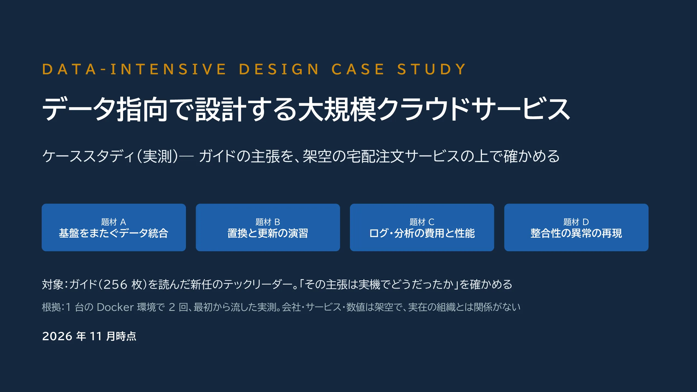
スライド 1 のテキストと解説
本資料は、ガイド「データ指向で設計する大規模クラウドサービス」のケーススタディです。ガイドは 256 枚で、設計の判断を 9 つのステップに沿って示しました。このケーススタディは、そのガイドが「実機で測る」と書いた点を、手元の 1 台の Docker 環境で確かめた記録です。題材は 4 つあります。題材 A は基盤をまたぐデータ統合、題材 B は置換と更新の演習、題材 C はログ・分析の費用と性能、題材 D は整合性の異常の再現です。舞台は架空の宅配注文サービスで、会社、サービス、数値はすべて架空です。実在の組織とは関係がありません。実験は 2 回、最初から流しました。2 回で結果が変わった箇所は、2 回の値を並べて書いています。数値は同じ環境の中の相対比較で、ほかの環境にそのまま当てはめることはできません。内容は 2026 年 11 月時点のものです。
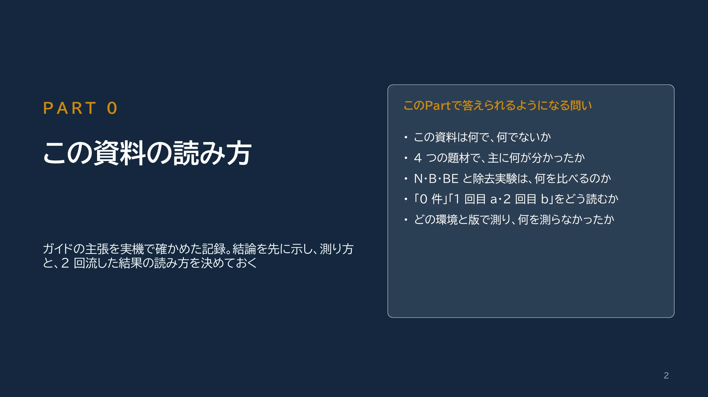
スライド 2 のテキストと解説
Part 0 では、この資料の読み方を決めます。最初に、この資料が何で、何でないかを確認します。次に、結論を先に 2 枚で示します。1 枚は 4 つの題材の主な結果、もう 1 枚はガイドの記述に条件を足すことになった点です。そのあと、舞台にした架空の宅配注文サービスの図と、4 つの題材がガイドのどの Part とどのステップに当たるかを示します。後半は測り方です。構成 N・B・BE の意味、除去実験、正常な操作も数えること、正解を生成器から作ること、判定器の監査を説明します。最後に、実験を 2 回流したことと数字の読み方、環境と製品の版、実行の数、測らなかったものを示します。Part 1 から 4 が題材ごとの結果、Part 5 がまとめです。数字はすべて、リポジトリの results にある summary と RERUN から写しています。
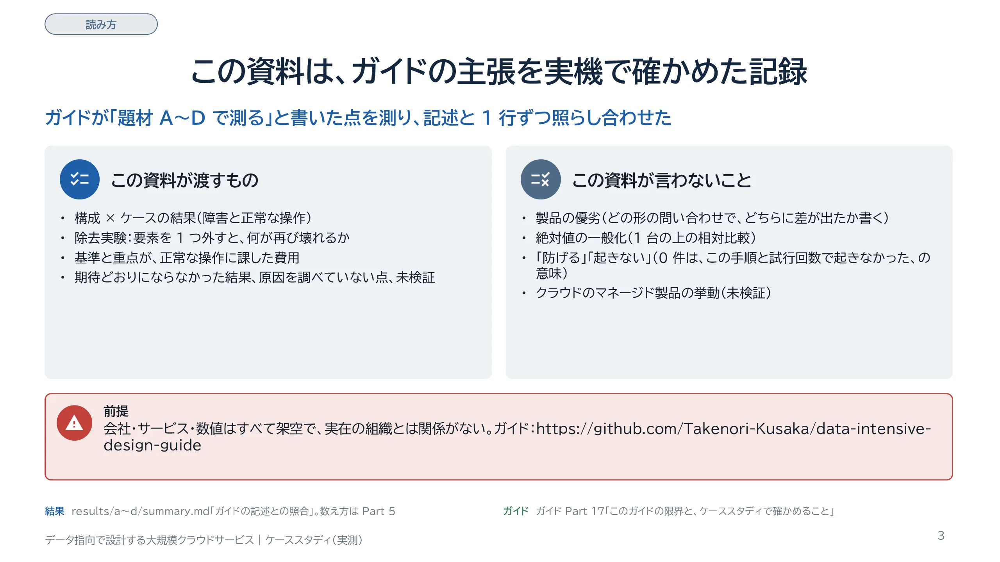
スライド 3 のテキストと解説
この資料が何で、何でないかです。ガイドは、一次資料で確かめられなかった点や、数字で示したい点に「ケーススタディで実測する」と書きました。この資料は、その点を実機で測り、ガイドの記述と 1 行ずつ照らし合わせた記録です。照合の表は 4 つの題材で合わせて 152 行あり、全体像は Part 5 で示します。渡すものは 4 つです。構成ごと、ケースごとの結果。要素を 1 つ外すと何が壊れるかの除去実験。基準を入れたことで正常な操作が払った費用。そして、期待どおりにならなかった結果と、原因を調べていない点です。一方で、これは製品の性能の比較ではありません。数値は 1 台の上の相対比較で、絶対値は一般化できません。「0 件」は、この手順と試行回数で起きなかったという意味です。会社、サービス、数値はすべて架空です。次の 2 枚で、結論を先に示します。
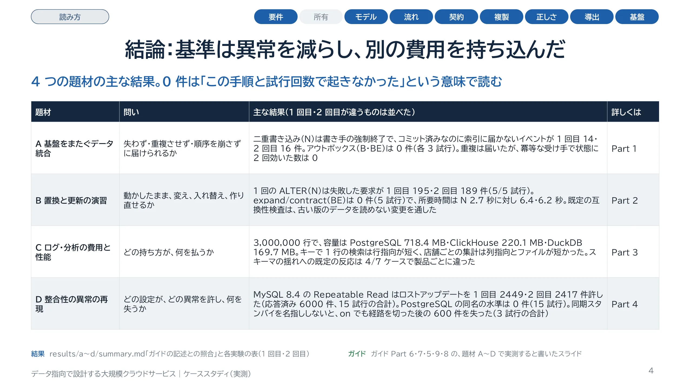
スライド 4 のテキストと解説
結論の先出しの 1 枚目です。題材ごとに、主な結果を 1 行にしました。題材 A では、二重書き込みの構成で書き手を強制終了すると、DB にコミット済みなのに索引に届かないイベントが 1 回目 14 件、2 回目 16 件出ました。アウトボックスの構成では 0 件でした。重複は届きましたが、冪等な受け手では状態に 2 回効いた数は 0 でした。題材 B では、1 回の ALTER で変える作りは失敗した要求が出て、expand/contract は 0 件でしたが、所要時間は長くなりました。題材 C は 300 万行での比較で、キーで 1 行の検索は行指向が短く、店舗ごとの集計は列指向とファイルが短い結果でした。題材 D では、MySQL 8.4 の Repeatable Read がロストアップデートを許し、PostgreSQL の同じ名前の水準は 0 件でした。試行の数は、条件ごとに 3〜5 回です。0 件は、防げるという意味ではありません。
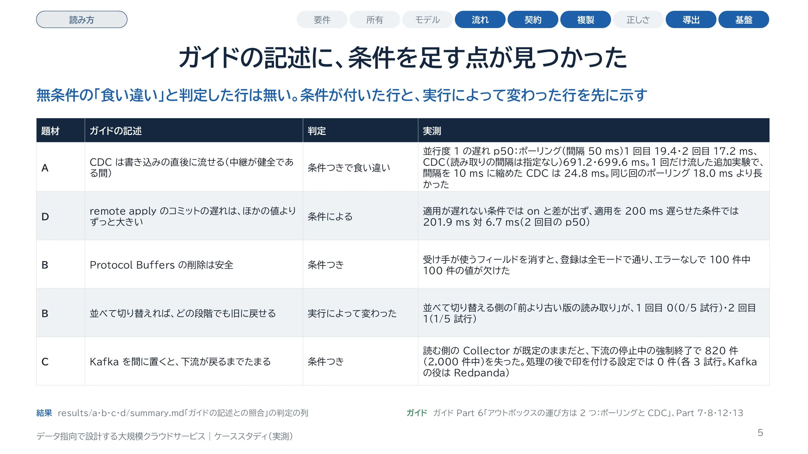
スライド 5 のテキストと解説
結論の先出しの 2 枚目で、条件を足す点を 5 つ選びました。1 つ目は題材 A で、ガイドは、CDC は中継が健全である間、書き込みの直後に流せると書きました。並行度 1 の遅れの p50 は、間隔 50 ミリ秒のポーリングで 1 回目 19.4、2 回目 17.2 ミリ秒、CDC で 691.2 と 699.6 ミリ秒でした。1 回だけ流した追加実験では、読み取りの間隔を縮めるたびに CDC の遅れは縮みました。ただし 10 ミリ秒でも 24.8 ミリ秒で、同じ回のポーリングの 18.0 ミリ秒より長いままでした。2 つ目は題材 D の remote_apply で、適用が遅れない条件では on と差が出ませんでした。3 つ目と 4 つ目は題材 B で、Protocol Buffers は検査を通っても値が欠ける変更があり、並べて切り替える手順は 2 回目の実行で読み取りの異常が 1 件出ました。5 つ目は題材 C で、Kafka を間に置いても、読む側の設定しだいで失いました。
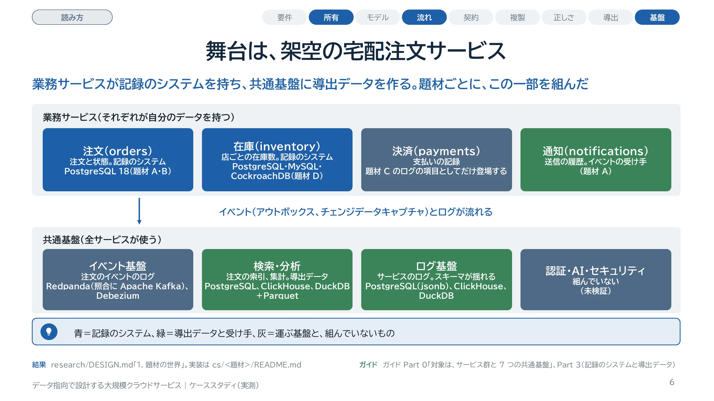
スライド 6 のテキストと解説
実験の舞台です。ガイドの Part 0 と同じ、架空の宅配注文サービスを使いました。上の段は業務サービスです。注文は、注文と状態を持つ記録のシステムで、PostgreSQL 18 の上に組みました。題材 A と B で使います。在庫は店ごとの在庫数で、題材 D では PostgreSQL、MySQL、CockroachDB の 3 つで同じ引き当てを流しました。通知は送信の履歴を持つ、イベントの受け手です。決済は、題材 C のログの項目としてだけ登場します。下の段は共通基盤です。イベント基盤は Redpanda で、一部を Apache Kafka でも流して照らし合わせました。検索と分析、ログ基盤は導出データの側で、PostgreSQL、ClickHouse、DuckDB と Parquet を比べました。認証、AI、セキュリティの各基盤は組んでいません。青が記録のシステム、緑が導出データと受け手です。データと正解は、種を固定した生成器から作りました。
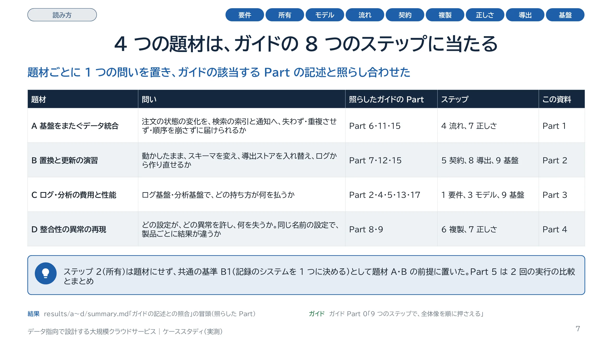
スライド 7 のテキストと解説
4 つの題材と、ガイドの Part、ステップの対応です。題材 A の問いは、注文の状態の変化を、検索の索引と通知へ、失わず、重複させず、順序を崩さずに届けられるか、です。ガイドの Part 6、11、15 と照らし、ステップ 4 の流れと、ステップ 7 の正しさに当たります。題材 B は、動かしたまま、スキーマを変え、導出ストアを入れ替え、ログから作り直せるか、です。Part 7、12、15 で、ステップ 5 の契約、ステップ 8 の導出、ステップ 9 の基盤です。題材 C は、ログ基盤と分析基盤で、どの持ち方が何を払うか、です。Part 2、4、5、13、17 と照らしました。題材 D は、どの設定がどの異常を許し、何を失うか、で、Part 8 と 9、ステップ 6 の複製とステップ 7 の正しさです。ステップ 2 の所有は、独立した題材にせず、共通の基準 B1 として題材 A と B の前提に置きました。このあとの各スライドの右上の表示は、その実験が確かめたステップを示します。
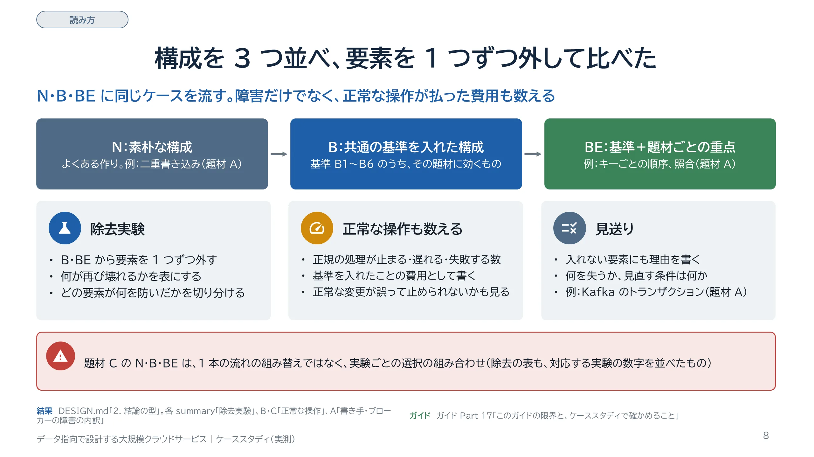
スライド 8 のテキストと解説
測り方の 1 枚目です。結論の型を 4 つの題材で揃えました。構成は 3 つです。N は素朴な構成で、よくある作りです。B は、共通の基準を入れた構成です。BE は、基準に加えて、題材ごとの重点を入れた構成です。たとえば題材 A では、N が二重書き込み、B がアウトボックスとポーリング、BE がアウトボックスと CDC です。WAL の上限は、CDC の落とし穴の実験だけで入れました。この 3 つに同じケースを流します。次に除去実験です。B や BE から要素を 1 つずつ外し、何が再び壊れるかを表にします。これで、どの要素が何を防いだかを切り分けます。3 つ目は、正常な操作も数えることです。基準を入れたせいで、正規の処理が止まる、遅くなる、失敗することがあります。これを基準の費用として数えました。4 つ目は見送りです。入れなかった要素には、何を失うかと、見直す条件を書きました。題材 C だけは、1 本の流れを組み替えたものではなく、実験ごとの選択の組み合わせです。
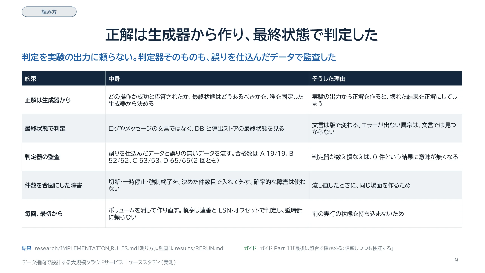
スライド 9 のテキストと解説
測り方の 2 枚目です。5 つの約束で測りました。1 つ目、正解は生成器から作ります。どの操作が成功と応答されたか、最終状態はどうあるべきかを、種を固定した生成器から決めます。実験の出力から正解を作ると、壊れた結果を正解にしてしまうからです。2 つ目、最終状態で判定します。ログやメッセージの文言ではなく、DB と導出ストアの最終状態を見ます。3 つ目、判定器を監査します。わざと欠落、重複、逆順などを仕込んだデータと、誤りの無いデータを流し、仕込んだ数だけを数えることを確かめました。監査は題材 A が 19 件、B が 52 件、C が 53 件、D が 65 件で、2 回の実行とも全部が合格です。4 つ目、障害は件数を合図に入れて外します。確率的な障害は使いません。5 つ目、毎回ボリュームを消して最初から流します。それでも、並行の競合に頼る数は実行ごとに変わりました。その読み方は 2 枚あとで説明します。
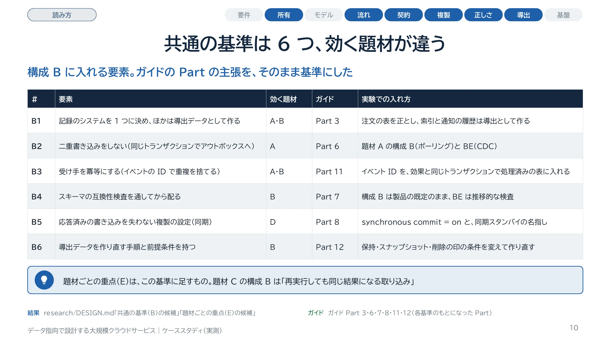
スライド 10 のテキストと解説
共通の基準 B1 から B6 です。構成 B と BE に入れる要素で、ガイドの各 Part の主張をそのまま基準にしました。B1 は、記録のシステムを 1 つに決め、ほかは導出データとして作ることです。B2 は、二重書き込みをせず、同じトランザクションでアウトボックスに書くことです。B3 は、受け手を冪等にすることで、イベントの ID で重複を捨てます。B4 は、スキーマの互換性検査を通してから配ることです。B5 は、応答済みの書き込みを失わない同期の複製の設定です。B6 は、導出データを作り直す手順と、保持やスナップショットといった前提条件を持つことです。題材ごとの重点は、これに足すものです。題材 A ならキーごとの順序、WAL の上限、照合。題材 B なら expand/contract や、新旧を並べた照合です。題材 C の構成 B は「再実行しても同じ結果になる取り込み」で、この表の 6 つとは別に summary が定めています。
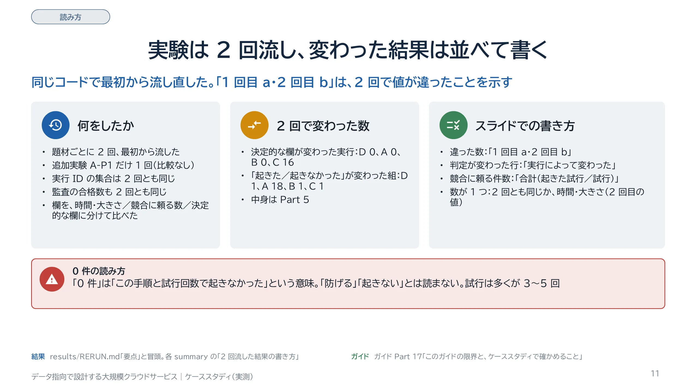
スライド 11 のテキストと解説
2 回流したことと、数字の読み方です。実験は題材ごとに 2 回、同じコードで最初から流しました。題材 A の追加実験 A-P1 だけは 1 回で、2 回の比較はありません。2 回とも実行 ID の集合は同じで、判定器の監査の合格数も同じでした。そのうえで、欄を 3 つに分けて比べています。時間と大きさ、並行の競合や時間に頼る数、それ以外の決定的な欄です。決定的な欄が変わった実行は、題材 D、A、B では 0 個、題材 C では 16 個でした。「起きた、起きなかった」が 2 回で変わった組は、D が 1、A が 18、B が 1、C が 1 です。このため、スライドでは次のように書きます。2 回で値が違う数は「1 回目 a・2 回目 b」と並べます。判定が変わった行は「実行によって変わった」と書き、断定しません。並行の競合に頼る件数は「合計（起きた試行／試行）」の形です。数が 1 つだけなら、2 回とも同じだったか、時間や大きさの欄で 2 回目の値です。
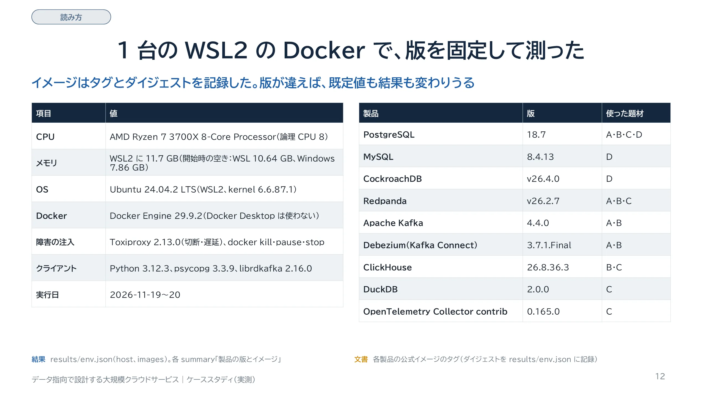
スライド 12 のテキストと解説
環境と製品の版です。実行したのは 1 台のマシンで、CPU は AMD Ryzen 7 3700X、論理 CPU は 8 です。WSL2 の Ubuntu 24.04.2 LTS の中の Docker Engine 29.9.2 を使い、Docker Desktop は使っていません。WSL2 のメモリは 11.7 ギガバイトです。製品は、PostgreSQL 18.7、MySQL 8.4.13、CockroachDB v26.4.0、Redpanda v26.2.7、Apache Kafka 4.4.0、Debezium 3.7.1.Final、ClickHouse 26.8.36.3、DuckDB 2.0.0、OpenTelemetry Collector contrib 0.165.0 です。実行日は 2026 年 11 月 19 日から 20 日です。題材 A の Redpanda は、何も指定しないと開発用の設定で起動したので、fsync を省かない設定に切り替えました。
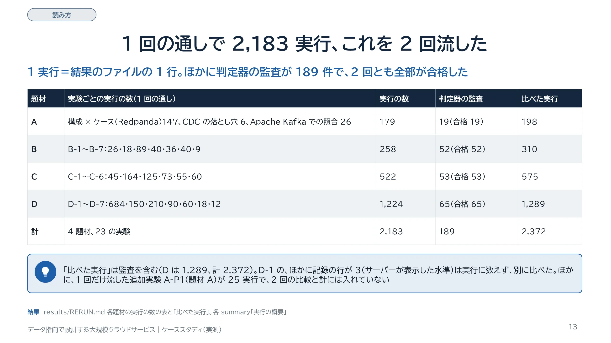
スライド 13 のテキストと解説
実行の数です。題材 A は、Redpanda での構成とケースの組み合わせが 147、CDC の落とし穴が 6、Apache Kafka での照合が 26 で、合わせて 179 実行です。ほかに、1 回だけ流した追加実験 A-P1 が 25 実行あり、計には入れていません。題材 B は B-1 から B-7 の 7 つの実験で 258 実行。題材 C は C-1 から C-6 で 522 実行。題材 D は D-1 から D-7 で 1,224 実行で、このうち 684 が分離レベルごとの手順です。4 つの題材を合わせると 2,183 実行で、これを 2 回流しました。判定器の監査は別に数え、A が 19、B が 52、C が 53、D が 65 の合わせて 189 件です。2 回とも全部が合格しました。なお、D-1 の結果のファイルには、水準を記録しただけの行が 3 行あります。この 3 行は実行に数えず、RERUN でも「比べた実行」とは別に比べています。
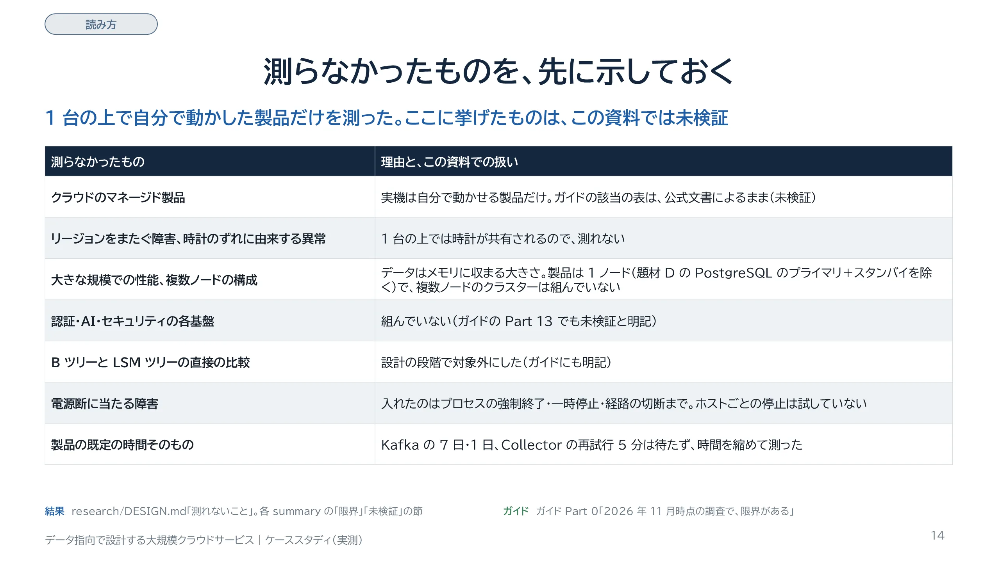
スライド 14 のテキストと解説
Part 0 の最後に、測らなかったものを示します。1 つ目、クラウドのマネージド製品は測っていません。実機は、コンテナで自分で動かせる製品だけで、ガイドの該当の表は公式文書によるままです。オープンソースの製品と、ソースは公開されているがライセンスに制限のある製品が混ざっています。2 つ目、リージョンをまたぐ障害と、時計のずれに由来する異常です。1 台の上では時計が共有されるので、測れません。3 つ目、大きな規模での性能と、複数ノードの構成です。データはメモリに収まる大きさで、複数ノードのクラスターは組んでいません。4 つ目、認証、AI、セキュリティの各基盤は組んでいません。5 つ目、B ツリーと LSM ツリーの直接の比較は、設計の段階で対象外にしました。6 つ目、電源断に当たる障害です。入れたのはプロセスの強制終了までで、ホストごと落とす障害は試していません。7 つ目、製品の既定の時間そのものです。Kafka の 7 日や 1 日、Collector の再試行の 5 分は待たず、時間を縮めて測りました。次の Part 1 から、題材ごとの結果に入ります。
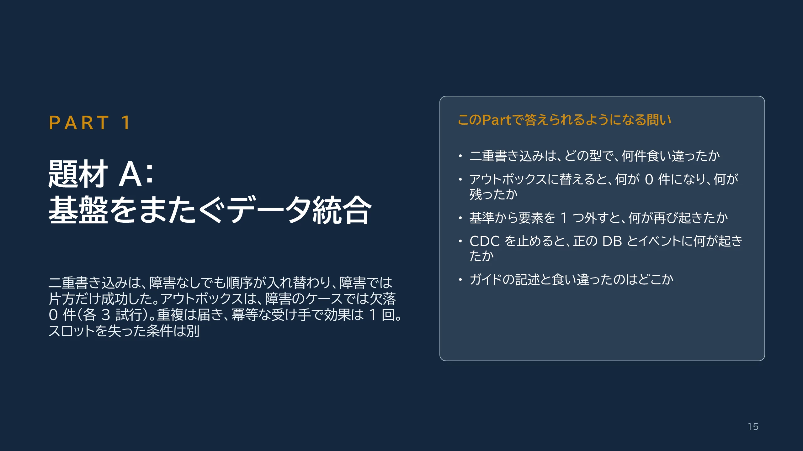
スライド 15 のテキストと解説
Part 1 は題材 A、基盤をまたぐデータ統合です。問いは、注文の状態の変化を、検索の索引と通知へ、失わず、重複させず、順序を崩さずに届けられるか、です。ガイドの Part 6 が「題材 A で実測する」と書いた点を、ここで確かめます。結論を先に言います。二重書き込みは、障害を入れなくても順序が入れ替わり、障害では片方だけが成功しました。アウトボックスを使う 2 つの構成では、書き手、ブローカー、受け手、運び手の障害のケースで、欠落は 0 件でした。各 3 試行です。CDC を止めてスロットが失われた条件は別で、後半で扱います。ただし重複は届き、受け手を冪等にして初めて効果が 1 回になりました。後半では、CDC を止めたときの WAL、ガイドと条件つきで食い違った遅れ、2 回の実行で有無が変わった点、原因を調べていない点を、隠さずに示します。数字はすべて結果のファイルから数えたもので、2 回の実行で違った数は並べて書きます。
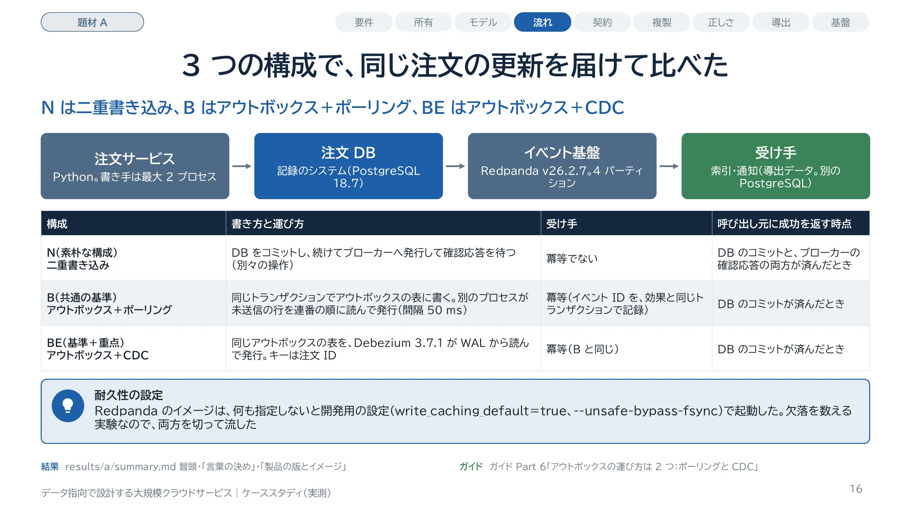
スライド 16 のテキストと解説
比べた構成は 3 つです。N は素朴な構成で、注文サービスが DB をコミットし、続けてブローカーへ発行する二重書き込みです。受け手は冪等ではありません。B は共通の基準を入れた構成で、注文の更新と同じトランザクションでアウトボックスの表に書き、別のプロセスが未送信の行を連番の順に読んで発行します。間隔は 50 ミリ秒です。BE は基準に題材ごとの重点を足した構成で、同じアウトボックスの表を Debezium が WAL から読みます。メッセージのキーは注文 ID です。B と BE の受け手は、イベント ID を効果と同じトランザクションで処理済みの表に入れます。応答済みの定義が構成で違う点に注意してください。N は DB のコミットとブローカーの確認応答の両方、B と BE は DB のコミットだけで成功を返します。Redpanda は開発用の設定を切って動かしました。次に、流したケースを見ます。
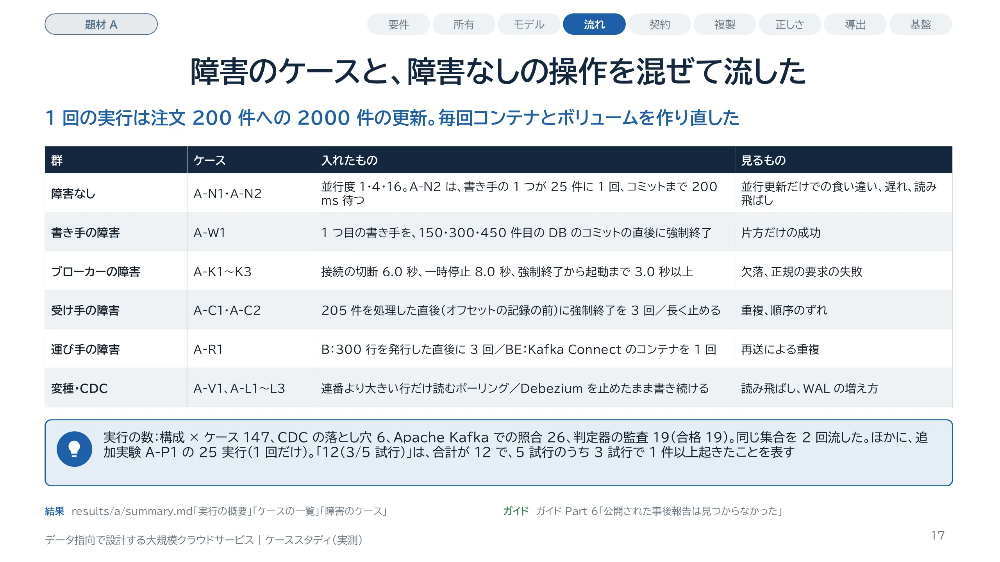
スライド 17 のテキストと解説
ケースの一覧です。障害なしのケースでは、並行度を 1、4、16 と変え、長いトランザクションを混ぜたものも流しました。障害は、確率ではなく件数を合図に入れています。書き手は、150、300、450 件目の DB のコミットの直後に強制終了しました。ブローカーは、切断を 6 秒、一時停止を 8 秒、強制終了から起動までを 3 秒以上としました。受け手は、効果をコミットした後、オフセットを記録する前に落としています。実行の数は、構成とケースの組み合わせが 147、CDC の落とし穴が 6、Apache Kafka での照合が 26 です。判定器は、誤りを仕込んだ列で監査し、19 件すべて合格でした。これを最初から 2 回流しました。並行度 4 と 16 の件数は並行の競合に頼るので、「合計、起きた試行、試行」の形で書きます。0 件は、この試行では起きなかったという意味です。次のスライドから結果です。
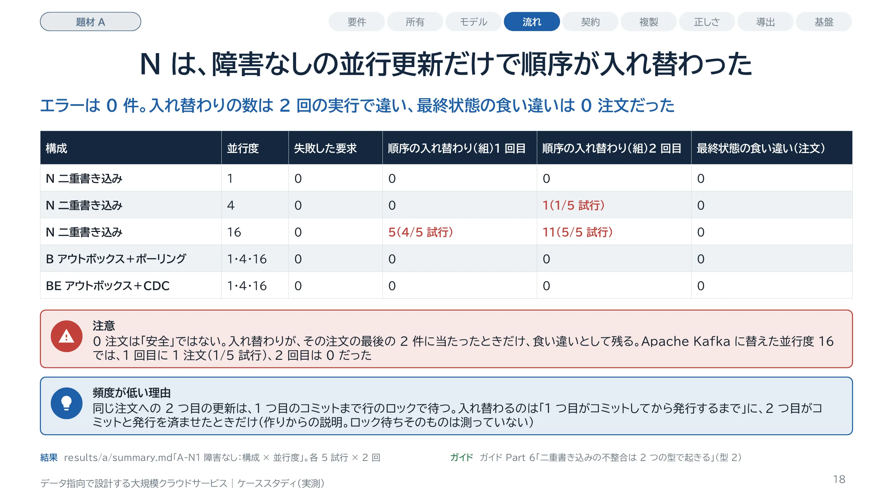
スライド 18 のテキストと解説
障害を 1 つも入れない実行の結果です。各行は 5 試行で、応答済みは合計 10000 件です。二重書き込みの N は、並行度 16 で、同じ注文の順序の入れ替わりが 1 回目は 5 組、2 回目は 11 組ありました。並行度 4 では、1 回目は 0、2 回目は 1 組です。失敗した要求は 0 件で、エラーは 1 件も返っていません。一方、最終状態の食い違いは、この条件では 2 回とも 0 注文でした。入れ替わりが、その注文の最後の 2 件に当たったときだけ、食い違いとして残るからです。0 注文は安全を意味しません。ブローカーを Apache Kafka に替えた並行度 16 では、1 回目に 1 注文が食い違いました。頻度が低い理由は、同じ注文への 2 つ目の更新が行のロックで待たされるためです。作りからの説明で、ロック待ちは測っていません。B と BE は、同じ条件で入れ替わりは 0 組でした。次は障害を入れたケースです。
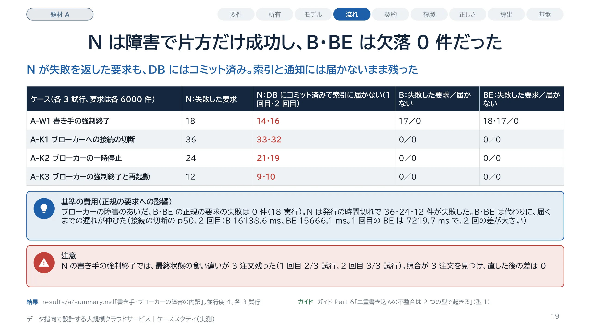
スライド 19 のテキストと解説
書き手とブローカーに障害を入れた結果です。並行度は 4、各 3 試行で、要求は合計 6000 件です。N では、発行に失敗した要求も、強制終了で応答が無かった要求も、DB にはコミットされていました。呼び出し元から見ると失敗ですが、注文の表は変わっていて、索引と通知には届きません。届かなかった数は、接続の切断で 1 回目 33 件、2 回目 32 件、書き手の強制終了で 14 件と 16 件です。B と BE では、同じ 4 つのケースで、DB にコミット済みなのに届かなかったイベントは 0 件でした。正規の要求への影響も見ます。ブローカーの障害のあいだ、B と BE の要求の失敗は 0 件でした。代わりに、届くまでの遅れが伸びています。N の書き手の強制終了では、最終状態の食い違いが 3 注文残り、照合が見つけて直しました。0 件は、この手順と試行回数で起きなかったという意味です。
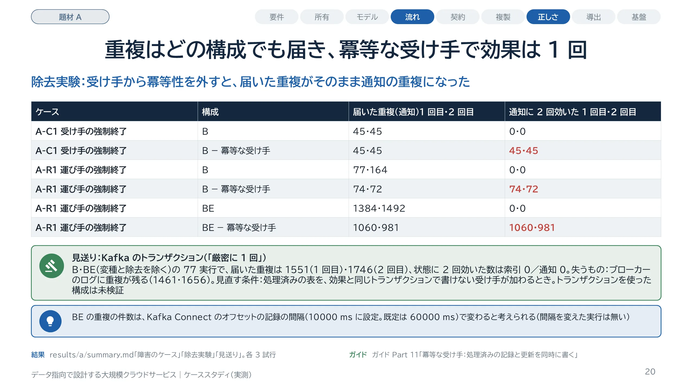
スライド 20 のテキストと解説
重複の結果です。並行度 4、各 3 試行です。受け手を、オフセットを記録する前に強制終了すると、同じメッセージが 45 回余分に届きました。運び手を強制終了すると、ポーリングの B では 1 回目 77 回、2 回目 164 回、CDC の BE では 1384 回と 1492 回の重複が届きました。BE の件数は、Kafka Connect のオフセットの記録の間隔、ここでは 10000 ミリ秒に左右されると考えられます。間隔を変えた実行はありません。冪等な受け手では、通知に 2 回効いた数は 2 回の実行とも 0 でした。冪等性を外すと、届いた重複と同じ数だけ、通知が 2 回送られています。表は通知の数ですが、索引も同じ値でした。Kafka のトランザクションは見送りました。B と BE の、変種と除去を除く 77 実行で、状態に 2 回効いた数は 0 だったからです。失うものと見直す条件は下のとおりです。トランザクションを使った構成は未検証です。
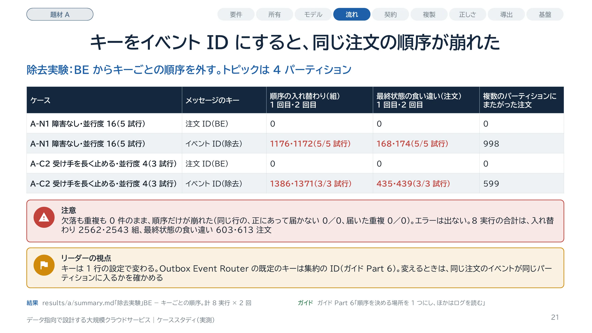
スライド 21 のテキストと解説
BE から、キーごとの順序を外した除去実験です。Debezium の Outbox Event Router のキーを、注文 ID からイベント ID に変えました。トピックは 4 パーティションです。障害なしの並行度 16 では、5 試行の合計で、順序の入れ替わりが 1 回目 1176 組、2 回目 1172 組、最終状態の食い違いが 168 注文と 174 注文でした。受け手を長く止めるケースでは、1386 組と 1371 組、435 注文と 439 注文です。どちらも全部の試行で起きました。キーを注文 ID にした構成は、同じケースで入れ替わりも食い違いも 0 でした。このとき、欠落も重複も 0 件のままです。順序だけが崩れ、エラーは出ません。パーティションの中でしか順序が保たれない、というガイドの記述と一致します。違う注文どうしの順は測っていません。次は、ポーリングの変種です。
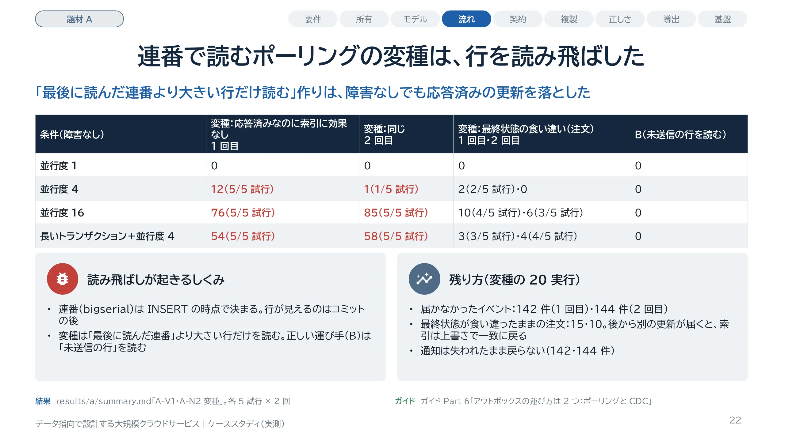
スライド 22 のテキストと解説
ガイドの Part 6 が「一次資料では確かめられなかった」と書いた点の実測です。変種の運び手は、最後に読んだ連番を覚え、それより大きい行だけを読みます。障害は入れていません。各 5 試行、応答済みは 10000 件です。応答済みなのに索引に効果が無かったイベントは、並行度 16 で 1 回目 76 件、2 回目 85 件、長いトランザクションを混ぜた並行度 4 で 54 件と 58 件でした。並行度 4 だけの条件では、1 回目は 12 件で全試行、2 回目は 1 件で 1 試行だけと、大きく変わりました。読み飛ばしは並行の競合に頼ります。並行度 1 では 0 件です。未送信の行を読む B は、同じ条件で 0 件でした。届かなかったイベントのうち、索引の食い違いとして残ったのは一部です。後から別の更新が届くと、索引は上書きされて一致に戻るからです。通知は失われたまま戻りません。
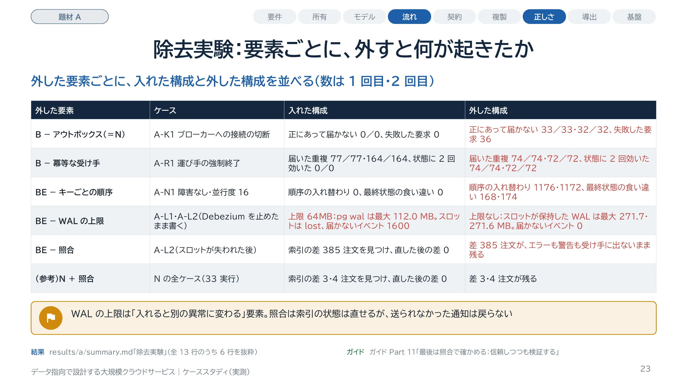
スライド 23 のテキストと解説
除去実験をまとめます。summary の表は 13 行あり、ここには要素ごとに 1 行、合計 6 行を抜き出しました。アウトボックスを外して二重書き込みに戻すと、接続の切断で、正にあって届かないイベントが 33 件と 32 件出ました。冪等な受け手を外すと、届いた重複がそのまま通知の重複になりました。キーごとの順序を外すと、入れ替わりが 1176 組と 1172 組です。WAL の上限だけは性質が違います。上限を外すと正の DB の WAL が増え続け、上限を付けるとスロットが失われて 1600 件が届かなくなりました。入れると別の異常に変わる要素です。照合は、スロットが失われた後の索引の差 385 注文を見つけて直しました。照合が無ければ、この差はエラーも警告も受け手に出ないまま残ります。ただし照合が直せるのは索引の状態で、送られなかった通知は戻りません。WAL の詳しい結果は 2 枚あとで見ます。
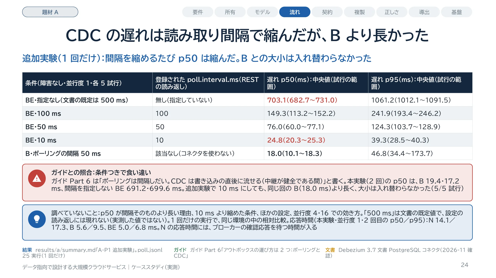
スライド 24 のテキストと解説
ガイドと条件つきで食い違った点です。ガイドの Part 6 は、ポーリングは間隔しだい、CDC は書き込みの直後に流せる、と書いています。本実験では、並行度 1 の遅れの p50 が、B で 19.4 と 17.2 ミリ秒、BE で 691.2 と 699.6 ミリ秒でした。BE は poll.interval.ms を指定していません。そこで追加実験 A-P1 で、この間隔だけを変えました。障害なし、並行度 1、各 5 試行で、1 回だけ流しています。間隔を縮めるたびに、p50 は縮みました。指定なしの 703.1 から、100 ミリ秒で 149.3、50 ミリ秒で 76.0、10 ミリ秒で 24.8 ミリ秒です。隣り合う条件で、試行の範囲は重なりません。ただし 10 ミリ秒でも、同じ回の B の 18.0 ミリ秒より長く、大小は入れ替わりませんでした。p50 が間隔より長い理由などは調べていません。相対比較で、絶対値は一般化できません。
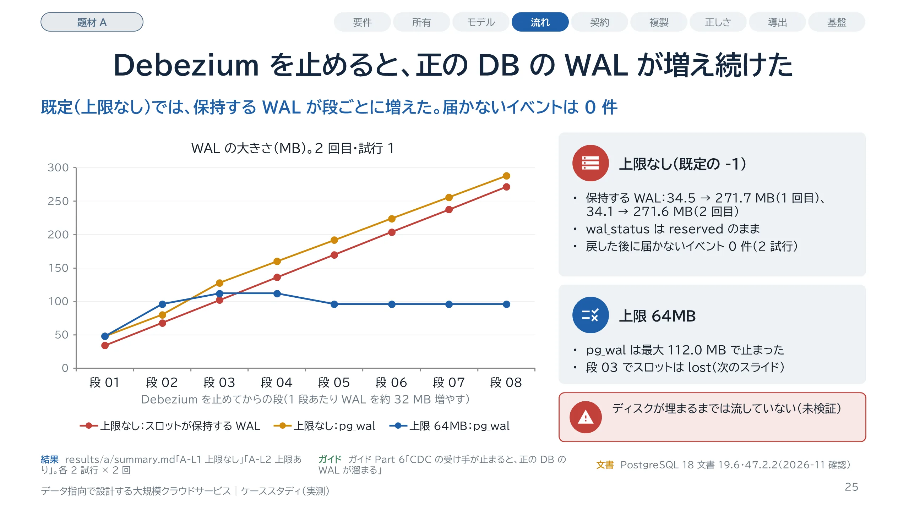
スライド 25 のテキストと解説
CDC の落とし穴の 1 つ目です。400 件を書いて届いたのを確かめ、Kafka Connect を止めます。そのあと、100 件の注文の更新と、取り込みの対象でない表への書き込みを 1 段として、8 段繰り返しました。1 段あたり WAL を約 32 メガバイト増やしています。既定の設定、つまり上限なしでは、スロットが保持する WAL は、1 段目の後の 34.1 メガバイトから、8 段目の後の 271.6 メガバイトまで増え続けました。これは 2 回目の試行 1 の値で、1 回目は 34.5 から 271.7 でした。wal_status は reserved のままで、Debezium を戻した後に届かないイベントは 0 件でした。上限を 64 メガバイトにすると、pg_wal は最大 112 メガバイトで止まりました。ただし、3 段目でスロットが失われています。ディスクが埋まるところまでは流しておらず、未検証です。次に、スロットが失われた後を見ます。
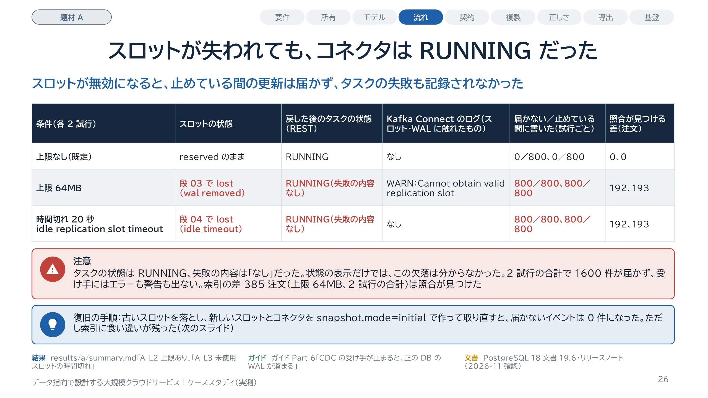
スライド 26 のテキストと解説
CDC の落とし穴の 2 つ目です。上限を 64 メガバイトにした条件では、3 段目でスロットの wal_status が lost、無効化の理由が wal_removed になりました。idle_replication_slot_timeout を 20 秒にした条件では、4 段目で idle_timeout により無効になりました。止めてから 18.5 秒から 19.0 秒の時点です。どちらの条件でも、Debezium を戻すと、REST で見たタスクの状態は RUNNING で、失敗の内容は記録されませんでした。それでも、止めている間に書いた 800 件は、試行ごとに全部届かず、2 試行の合計は 1600 件です。上限ありの条件では、Kafka Connect のログに WARN が出ていました。時間切れの条件では、スロットや WAL に触れた警告もエラーも記録されていません。索引の差は、照合が見つけました。次は、取り直した後の話です。
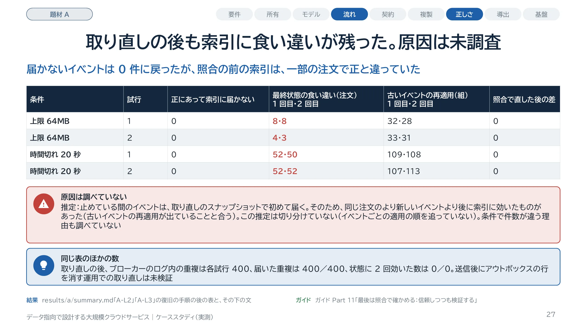
スライド 27 のテキストと解説
期待どおりにならなかった結果です。スロットを作り直し、snapshot.mode を initial にして取り直すと、正にあって索引に届かないイベントは 0 件になりました。ところが、照合の前の索引には、最終状態の食い違いが残りました。上限 64 メガバイトの条件では、試行ごとに、1 回目が 8 注文と 4 注文、2 回目が 8 注文と 3 注文です。時間切れの条件では、52 と 52、50 と 52 でした。同じ実行で、古いイベントの再適用も出ています。この食い違いの原因は調べていません。推定はあります。止めている間のイベントは、取り直しのスナップショットで初めて届くので、同じ注文のより新しいイベントより後に索引に効いた、というものです。ただし、イベントごとの適用の順を追っておらず、切り分けていません。条件で件数が違う理由も調べていません。照合はこの差を見つけ、直した後の差は 0 でした。
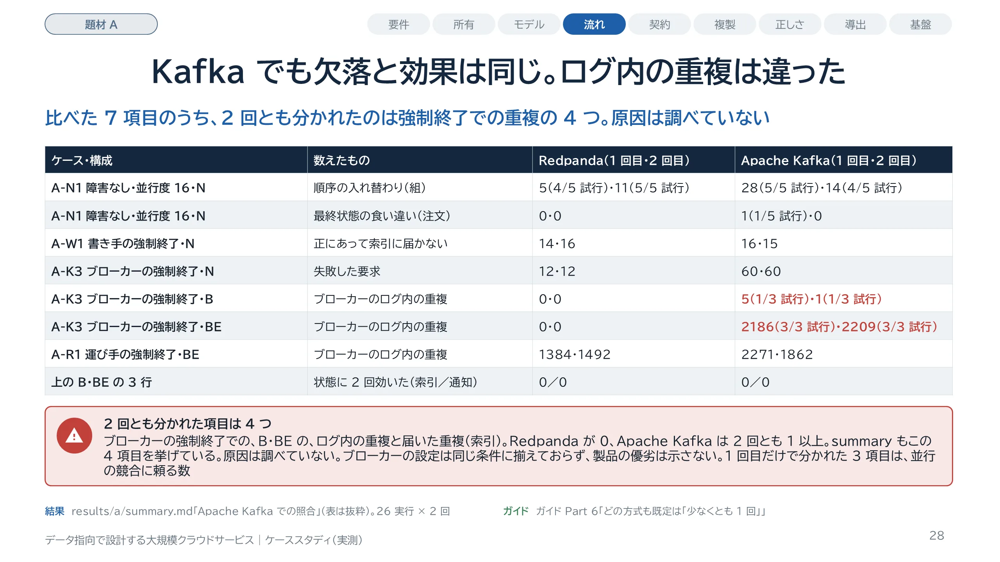
スライド 28 のテキストと解説
ブローカーだけを Apache Kafka に替えた照合です。KRaft の 1 ノードで、設定は既定のまま、メッセージごとの fsync はしていません。26 実行を 2 回流しました。summary は 7 項目について、起きたか起きなかったかを比べています。欠落の 2 項目、ブローカーのログ内の重複、届いた重複、通知が 2 回効いた数、順序の入れ替わり、最終状態の食い違いです。分かれた項目は 1 回目が 7、2 回目が 4 でした。2 回とも分かれたのは 4 つで、ブローカーの強制終了での、B と BE の、ログ内の重複と届いた重複です。Redpanda は 2 回とも 0、Apache Kafka は B で 5 と 1、BE で 2186 と 2209 でした。原因は調べていません。片方の回だけで分かれた 3 つは、並行の競合に頼る数です。冪等な受け手のある B と BE では、状態に 2 回効いた数はどちらも 0 でした。設定を揃えた比較ではなく、製品の優劣は示しません。
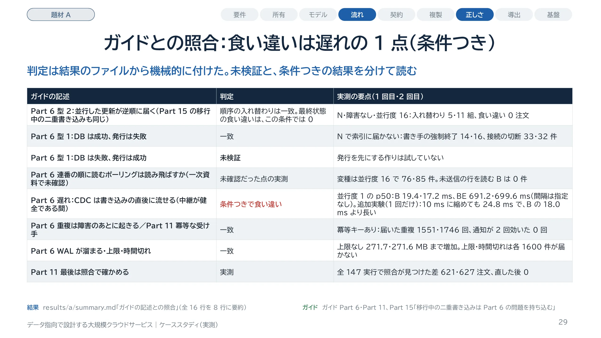
スライド 29 のテキストと解説
ガイドの Part 6、Part 11、Part 15 の記述と、実測を並べます。summary の照合の表は 16 行あり、ここでは 8 行に要約しました。数は 1 回目、2 回目の順です。一致したのは、片方だけ成功する型、障害のあとの重複、冪等な受け手、パーティションのキー、WAL の保持と上限と時間切れです。二重書き込みの逆順の型は、順序の入れ替わりは起きましたが、最終状態の食い違いは、この条件では 0 でした。Part 15 の移行中の二重書き込みも、同じ結果を指します。食い違ったのは遅れの 1 点で、条件つきです。追加実験で、間隔を縮めると遅れは縮みましたが、B との大小は入れ替わりませんでした。未検証は、発行を先にして DB が失敗する型です。ガイドが未確認としていた、連番のポーリングの読み飛ばしは、実測で起きました。未送信の行を読む B の全 41 実行では、同じ注文の順序の入れ替わりは 0 組でした。違う注文どうしの順は測っていません。次は、2 回の実行で変わった点です。
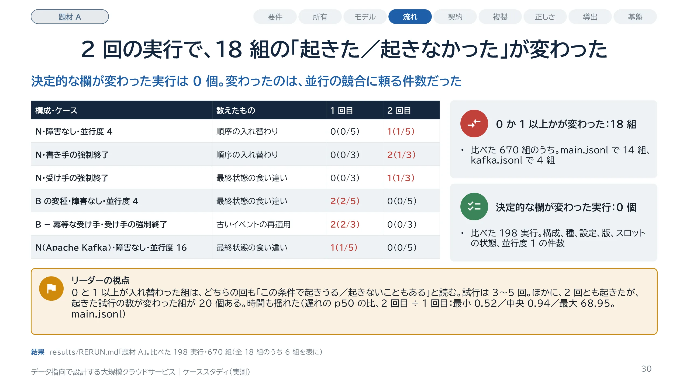
スライド 30 のテキストと解説
同じコードで最初から 2 回流し、結果を比べました。題材 A で比べた実行は 198 個です。構成、種、設定、製品の版、コネクタの状態、スロットの状態、並行度 1 の件数といった決定的な欄は、1 つも変わりませんでした。一方、構成とケースと数えたものの組 670 個のうち、合計が 0 か 1 以上かが変わった組は 18 個ありました。Redpanda の結果で 14 組、Apache Kafka の結果で 4 組です。表はその一部です。たとえば、N の障害なしの並行度 4 では、順序の入れ替わりが 1 回目は 0、2 回目は 1 組でした。逆に、変種のポーリングの最終状態の食い違いは、1 回目が 2 注文、2 回目は 0 です。試行は 3 回から 5 回しかありません。0 と 1 以上が入れ替わった組は、どちらの回の結果も、この条件で起きうるし、起きないこともある、と読みます。1 回だけの 0 件で安全と判断しないでください。
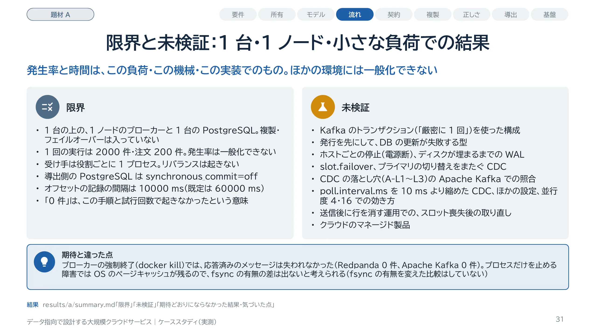
スライド 31 のテキストと解説
この題材の限界と、未検証の点です。実験は 1 台の上で、ブローカーは 1 ノード、PostgreSQL は 1 台です。複製、フェイルオーバー、リージョンをまたぐ障害は入っていません。1 回の実行は 2000 件、注文 200 件と小さく、発生率は一般化できません。受け手は役割ごとに 1 プロセスで、リバランスは起きません。未検証は 8 つあります。Kafka のトランザクション、発行を先にして DB が失敗する型、電源断に当たるホストごとの停止とディスクが埋まるまでの WAL、フェイルオーバー用のスロット、CDC の落とし穴の Apache Kafka での照合、poll.interval.ms を 10 ミリ秒より縮めた CDC など、行を送信後に消す運用での取り直し、クラウドのマネージド製品です。ブローカーの強制終了で、応答済みのメッセージは失われませんでしたが、これはプロセスだけを止めた結果です。fsync の有無を変えた比較はしていません。最後に、持ち帰る問いをまとめます。
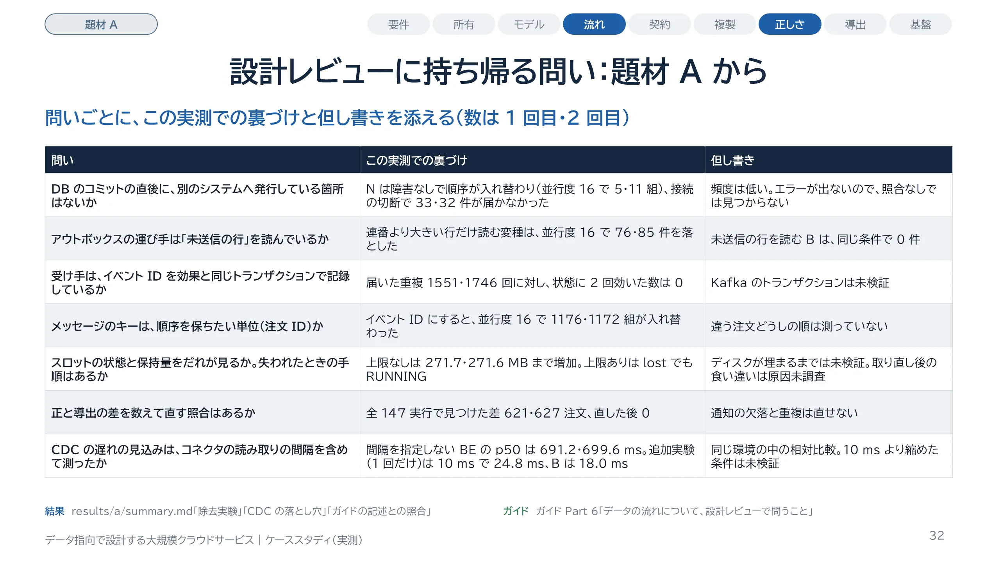
スライド 32 のテキストと解説
題材 A から、設計レビューに持ち帰る問いを 7 つにまとめます。1 つ目は、DB のコミットの直後に発行している箇所です。二重書き込みは、頻度は低くても、エラーなしで入れ替わり、障害では片方だけ成功しました。2 つ目は、アウトボックスの運び手が未送信の行を読んでいるかです。連番より大きい行だけを読む作りは、障害なしで更新を落としました。3 つ目は受け手の冪等性、4 つ目はメッセージのキーです。5 つ目は、スロットの状態と保持量をだれが見るかです。コネクタの表示は RUNNING のままでした。6 つ目は照合です。照合は索引の差を見つけて直しましたが、通知の欠落と重複は直せません。7 つ目は遅れの見込みで、コネクタの読み取りの間隔を含めて測ります。どの数も、1 台の小さな負荷での結果です。自分の環境で、同じ問いを測って確かめてください。次の Part 2 は、題材 B、置換と更新の演習です。
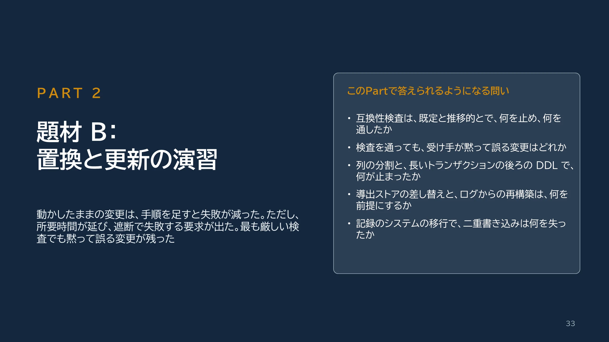
スライド 33 のテキストと解説
Part 2 は題材 B、置換と更新の演習です。問いは、動かしたまま、スキーマを変え、導出ストアを入れ替え、ログから作り直せるか、です。実験は B-1 から B-7 の 7 つで、すべて 2 回、最初から流しました。先に結論を言います。互換性検査、expand/contract、並べて切り替える手順、論理レプリケーションと遮断は、この手順と試行回数では、素朴な作りで出た失敗や欠落を減らしました。一方で、所要時間は延び、遮断した旧へ書こうとした要求は失敗しました。また、Protocol Buffers では、最も厳しい検査でも登録が通り、受け手が黙って誤る変更が 3 件ありました。2 回の実行で結果が変わった箇所は、2 回の値を並べて示します。時間は同じ環境の中の相対比較です。
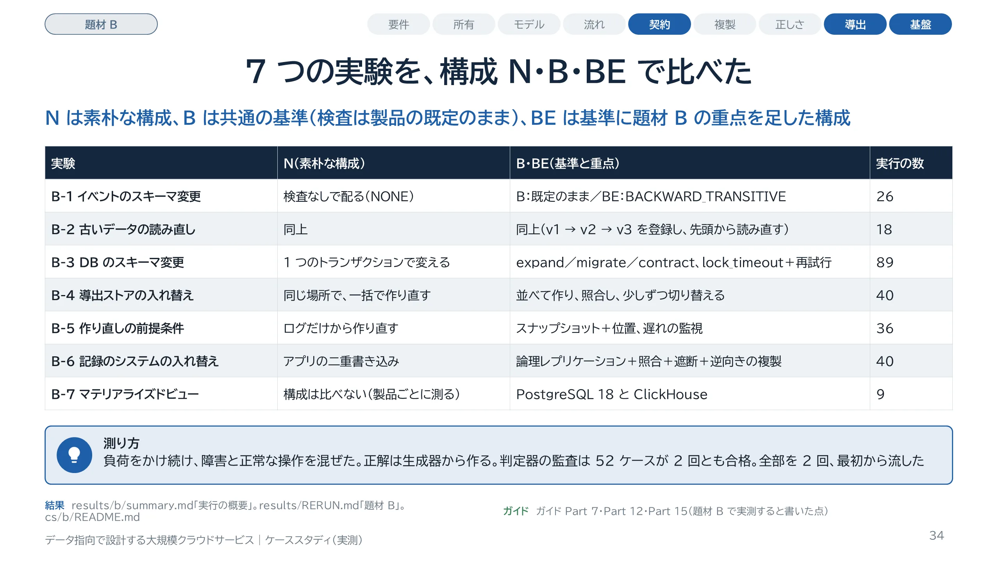
スライド 34 のテキストと解説
題材 B の全体です。構成の呼び名は 3 つです。N は素朴な構成、B は共通の基準を入れた構成で、互換性検査は製品の既定のままです。BE は、基準に題材 B の重点を足した構成で、推移的な検査、expand/contract、新旧を並べて照合してから切り替える手順、削除の印が消える前に受け手が追いつくことの監視を入れます。表の右端は 1 回ぶんの実行の数で、2 回とも同じ実行 ID の集合を流しました。B-3 から B-7 は、書き手と読み手の負荷をかけ続けながら操作します。受け手の停止と新のインスタンスの再起動は、件数を合図に入れました。長いトランザクションは時間で、欠陥は受け手の作りとして入れました。正解は生成器と、応答を受けた書き込みの記録から作ります。判定器の監査は 52 ケースが 2 回とも合格でした。次のスライドから、実験ごとに結果を見ます。
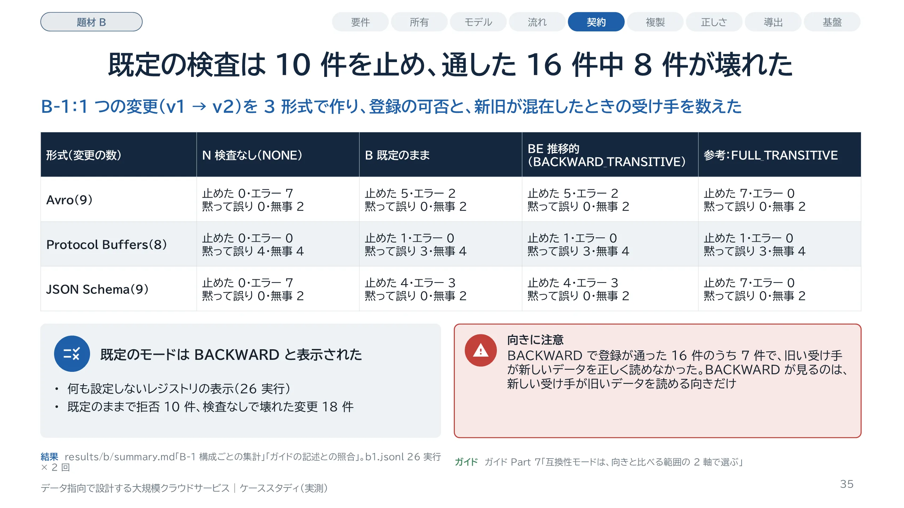
スライド 35 のテキストと解説
B-1 は、イベントのスキーマ変更です。変更は Avro 9、Protocol Buffers 8、JSON Schema 9 の計 26 件で、決定的な実験なので 2 回とも同じ結果でした。各セルは変更の数です。「止めた」は v2 の登録が拒否された変更、「エラー」と「黙って誤り」は、登録が通り、新旧の混在のどちらかの向きで受け手が壊れた変更です。検査なしで配ると 18 件で受け手が壊れました。既定のままのレジストリは 10 件を止めましたが、Avro 2 件、Protocol Buffers 3 件、JSON Schema 3 件は通って壊れました。版が 2 つだけなので、B と BE は同じ結果です。差は次の B-2 で出ます。BACKWARD は、新しい受け手が旧いデータを読めることだけを見ます。BACKWARD で通った 16 件のうち 7 件で、旧い受け手が新しいデータを正しく読めませんでした。Redpanda の内蔵レジストリだけの結果です。
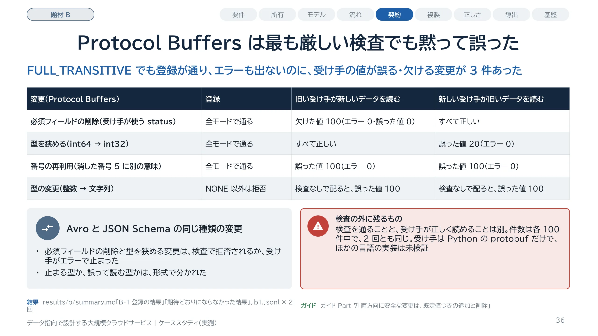
スライド 36 のテキストと解説
期待と違った結果の 1 つ目です。Protocol Buffers では、7 つのモードのどれでも登録が通り、受け手がエラーを出さないのに、値が誤る、または欠ける変更が 3 件ありました。数字は各 100 件を読んだ結果で、2 回とも同じです。受け手が使っている status を消すと、旧い受け手は 100 件すべてを型の既定値で黙って埋めました。int64 を int32 に狭めると、2 の 31 乗を超える値を 5 件に 1 件入れたデータで、20 件が誤った値になりました。消した番号 5 に別の意味のフィールドを割り当てると、両方の向きで 100 件が誤り、旧い受け手の note に email の値が入りました。Avro と JSON Schema の同じ種類の変更（必須フィールドの削除、型を狭める）は、検査で拒否されるか、受け手がエラーで止まりました。受け手は Python の protobuf だけで、ほかの言語の実装は試していません。
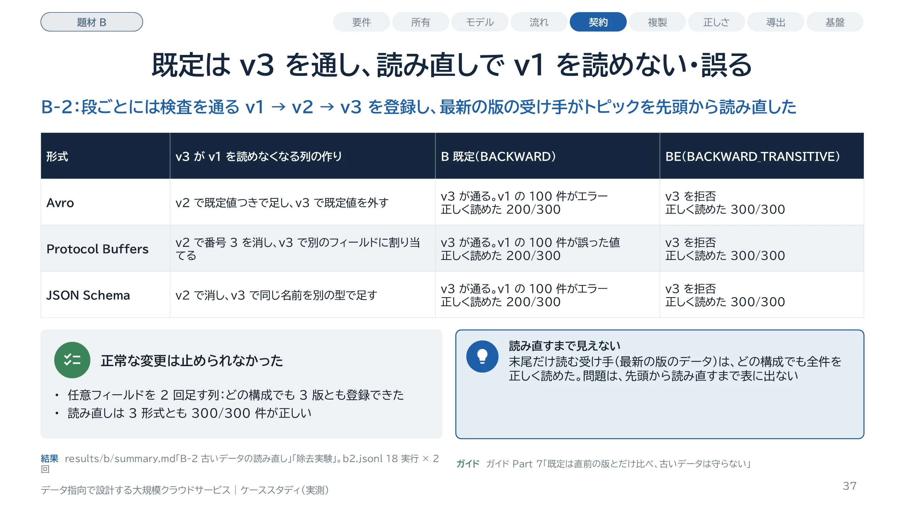
スライド 37 のテキストと解説
B-2 は、古いデータの読み直しです。版を 1 つ登録するたびに 100 件を書き、計 300 件を、登録できた最新の版の受け手が先頭から読み直します。既定の BACKWARD は直前の版とだけ比べるので、3 形式とも v3 まで登録が通りました。読み直すと、v1 のデータ 100 件が、Avro と JSON Schema ではエラー、Protocol Buffers では誤った値になりました。止まる型と、黙って誤る型に分かれた、ということです。BACKWARD_TRANSITIVE では 3 形式とも v3 の登録が拒否され、読み直しは 300 件すべて正しく読めました。正常な変更の側も確かめています。任意フィールドを 2 回足すだけの列は、どの構成でも 3 版とも登録でき、300 件すべて正しく読めました。末尾だけ読む受け手は、どの構成でも全件を正しく読めたので、この問題は読み直すまで表に出ません。決定的な実験で、2 回とも同じ結果です。
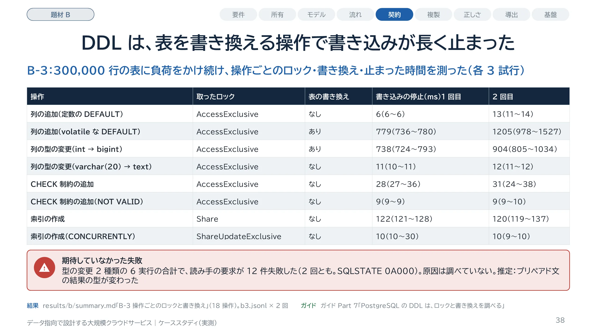
スライド 38 のテキストと解説
B-3 の 1 つ目は、PostgreSQL 18 の DDL の操作ごとの実測です。300,000 行の表に、書き手 4・読み手 2 スレッドの負荷をかけ続けました。止まった時間は、成功した要求の完了が 1 件も無かった最長の区間で、3 試行の中央値です。表を書き換えた volatile な DEFAULT つきの列の追加と、int から bigint への型の変更では、書き込みが数百 ms から 1 秒あまり止まりました。定数の DEFAULT や NOT VALID の制約は、同じ ACCESS EXCLUSIVE でも十数 ms 以下でした。索引は、通常の作成が書き込みを約 120 ms 止め、CONCURRENTLY は 10 ms でした。ロックと書き換えの有無は 2 回とも同じで、時間は揺れました。なお、列の型の変更 2 種類の 6 実行の合計で、読み手の要求が 2 回とも 12 件失敗しました。原因は調べていません。残りの操作は summary にあります。
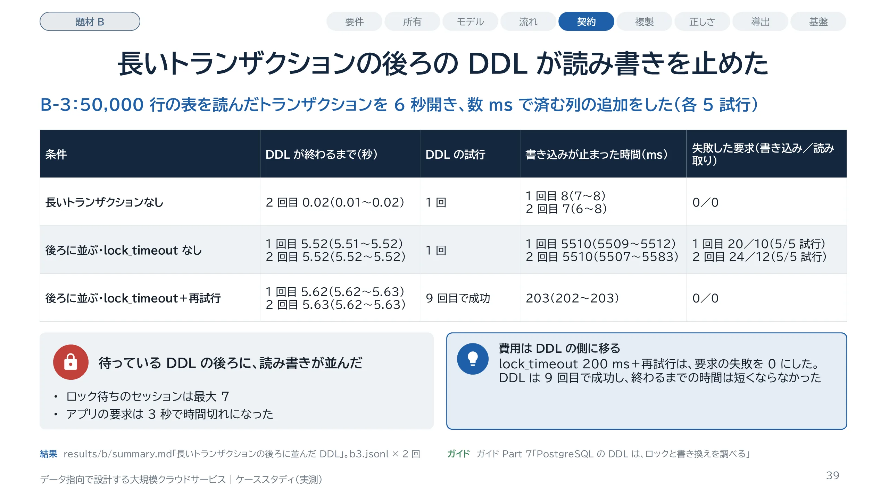
スライド 39 のテキストと解説
ガイドが「文書に明記が見つからなかったので題材 B で測る」と書いた点です。表を 1 回読んだだけのトランザクションを 6 秒開いたままにし、0.5 秒後に列の追加を実行しました。アプリの要求は 3 秒で時間切れになります。lock_timeout を設定しないと、DDL は約 5.5 秒待ち、その後ろに、あとから来た読み書きが並びました。書き込みも読み取りも約 5.5 秒止まり、時間切れで失敗した要求は、1 回目が書き込み 20・読み取り 10、2 回目が 24・12 で、どちらも 5 試行すべてで出ました。lock_timeout を 200 ms にして再試行すると、DDL は 9 回目で成功し、止まった時間は 203 ms、失敗した要求は 0 でした。費用は DDL 自身の側にあります。成功したのは 9 回目で、終わるまでの時間は約 5.6 秒と、設定しない場合より少し長くなりました。長いトランザクションが居る間は、どちらでも DDL は終わりません。
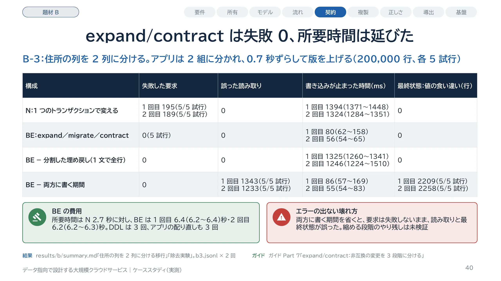
スライド 40 のテキストと解説
B-3 の 3 つ目は、住所の列を郵便番号と住所の 2 列に分ける移行です。新旧のアプリが混在する中で行いました。1 つのトランザクションで列の追加、埋め戻し、旧列の削除を行う N は、失敗した要求が 1 回目 195、2 回目 189 で、5 試行すべてで出ました。旧列を読み書きする版がまだ動いているためで、エラーは UndefinedColumn です。書き込みは約 1.3 秒から 1.4 秒止まりました。expand/contract の BE は、2 回とも、失敗した要求、誤った読み取り、最終状態の食い違いが 0 でした。止まった時間は 80 ms と 56 ms です。費用は所要時間で、N の 2.7 秒に対し 6.4 秒と 6.2 秒、DDL は 3 回、アプリの配り直しも 3 回になりました。埋め戻しを 1 文にすると書き込みが 1.2 秒以上止まり、両方に書く期間を省くと、失敗は 0 のまま、誤った読み取りと食い違いが出ました。縮める段階をやり残した状態は未検証です。
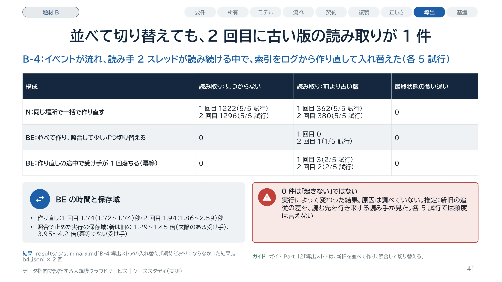
スライド 41 のテキストと解説
B-4 は、導出ストアの差し替えです。注文 500 件のイベント 10,000 件を先に流し、その後も毎秒 200 件で流し続けます。同じ場所で一括で作り直す N は、作り直しの間、読み取りで見つからない注文と、前より古い版の読み取りが、2 回とも 5 試行すべてで出ました。並べて作り、照合し、少しずつ切り替える BE は、見つからない読み取りが 2 回とも 0 でした。ただし、前より古い版の読み取りは、1 回目が 0、2 回目が 5 試行のうち 1 試行で 1 件です。ここは実行によって変わった結果で、ガイドとの照合の判定も、1 回目は一致、2 回目は一部だけ再現になりました。最終状態は正解と一致しています。原因は調べていません。推定は、新旧の追従の差を、読む先を行き来する読み手が見た、です。読む先を利用者ごとに固定する作りは試していません。試行は各 5 回なので、頻度は言えません。
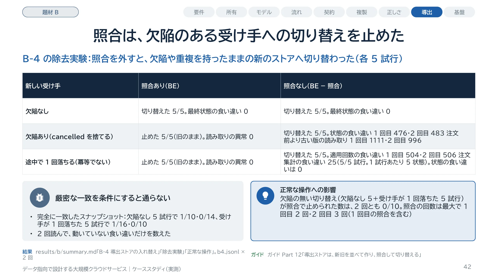
スライド 42 のテキストと解説
B-4 の除去実験です。新しい受け手に、cancelled のイベントを捨てる欠陥を仕込みました。照合ありは、2 回とも 5 試行すべてで切り替えを止め、旧のままなので読み取りの異常は 0 でした。照合を外すと 5 試行すべてで切り替わり、状態の食い違いが 1 回目 476 注文、2 回目 483 注文、前より古い版の読み取りが 1111 と 996 出ました。冪等でない受け手が作り直しの途中で 1 回落ちた場合も、照合ありは止め、照合なしは切り替えて、適用回数の食い違いが 504 注文と 506 注文、集計の食い違いが 5 試行の合計で 25 でした。状態の食い違いは 0 なので、状態だけを比べる照合では見つかりません。欠陥が無ければ、照合を外しても食い違いは 0 でした。照合を外した害が出たのは、欠陥があるときだけです。流れている更新の下では、新旧が 1 つのスナップショットで完全に一致することはほとんどありませんでした。
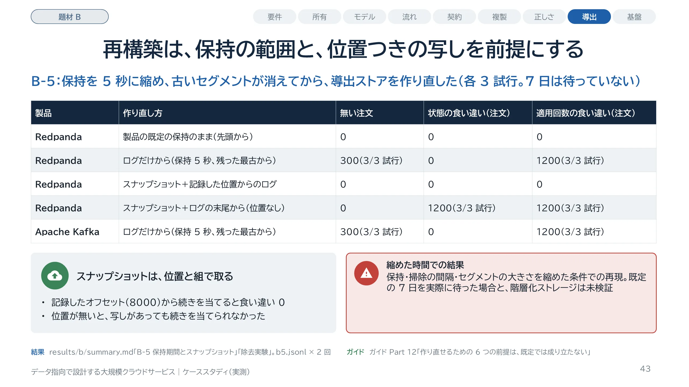
スライド 43 のテキストと解説
B-5 は、ログからの再構築の前提です。イベント 12,000 件のうち 8,000 件を流した時点で、導出ストアのスナップショットと、対応するオフセットを取りました。注文 500 件のうち 100 件は、最初の 2,000 件にしかイベントがありません。保持を 5 秒に縮めると、ログの先頭は 8,000 付近まで進みました。残ったログだけから作り直すと、無い注文が 3 試行の合計で 300、適用回数の食い違いが 1200 注文で、Redpanda でも Apache Kafka でも同じでした。スナップショットと、記録した位置からのログで作り直すと、食い違いは 0 でした。位置を記録せず、スナップショットとログの末尾から始めると、状態の食い違いが 1200 注文出ました。スナップショットがあっても、位置と対応していなければ続きを当てられません。既定の保持のまま同じだけ待った実行は、何も消えず食い違い 0 でした。既定の 7 日そのものは待っていません。件数は 2 回とも同じです。
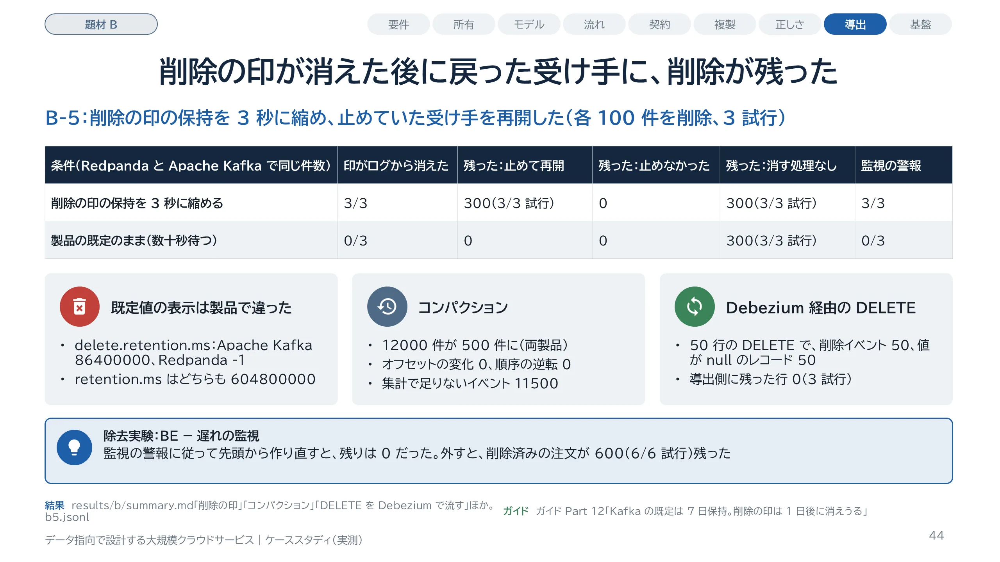
スライド 44 のテキストと解説
削除の印の実験です。注文 500 件を読み終えた受け手を止め、100 件を削除してから、待って再開しました。削除の印の保持を 3 秒に縮めると、印は中央値で 18 秒から 20 秒後にログから消え、止めていた受け手には、削除済みの注文が 3 試行の合計で 300 件残りました。両製品で、2 回とも同じです。止めなかった受け手と、先頭から作り直した受け手は 0 件でした。遅れの監視は、縮めた条件で 3 試行すべて警報を出し、既定の保持での誤った警報は 0 でした。削除の印を受け取っても消す処理が無い受け手は、どの条件でも全件が残りました。既定値の表示は製品で違い、Apache Kafka は 1 日、Redpanda は -1 でした。既定のままの実行は数十秒待っただけで、Redpanda の既定で印がいつ消えるかは分かりません。コンパクションでは 12,000 件が 500 件になりました。出典の補足：summary「製品が表示したトピックの既定値」。
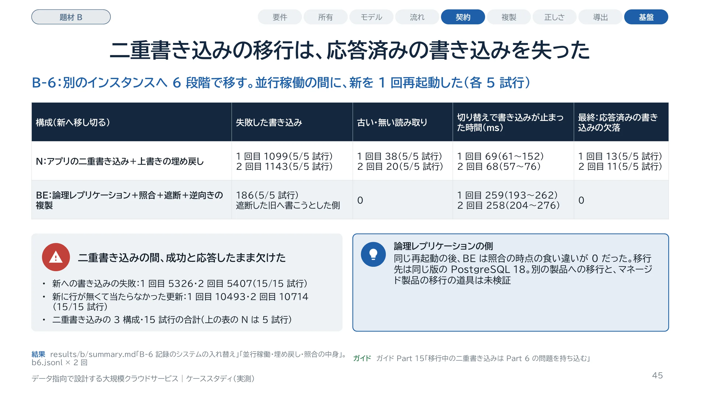
スライド 45 のテキストと解説
B-6 は、記録のシステムの移行です。先に 20,000 行を入れ、書き手 4・読み手 2 スレッドが挿入と更新を続けます。アプリは 2 組に分かれ、行き先の切り替えを 0.7 秒ずらします。アプリの二重書き込みの N は、新へ移し切った後、応答済みの書き込みの欠落が 1 回目 13、2 回目 11 で、どちらも 5 試行すべてで出ました。古い読み取りや無い読み取りも出ています。並行稼働の間、新への書き込みの失敗や、新に行が無くて当たらなかった更新が、要求としては成功のまま積み重なっていました。論理レプリケーション、照合、遮断つきの切り替え、逆向きの複製を入れた BE は、2 回とも、古い・無い読み取りと欠落が 0 でした。ただし無料ではありません。遮断した旧へ、まだ切り替わっていない組が書こうとした要求が 186 件失敗し、切り替えで書き込みが止まった時間は N より長くなりました。移行先は同じ版の PostgreSQL で、別の製品への移行は未検証です。
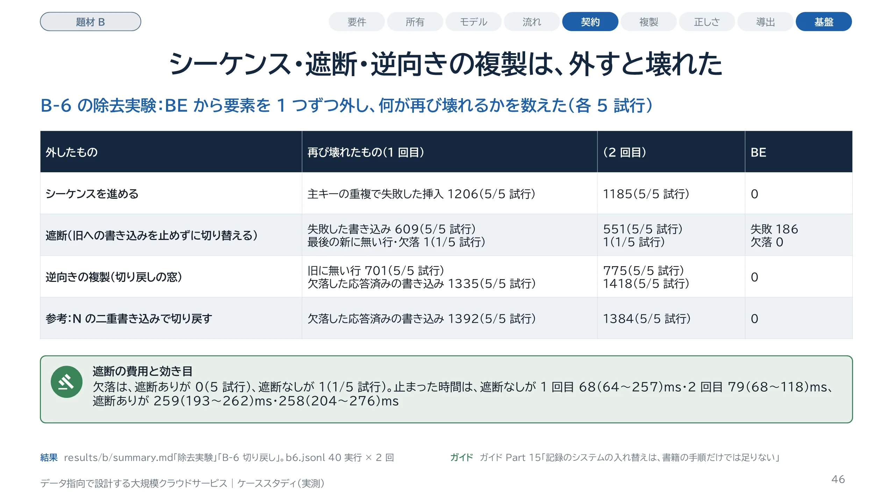
スライド 46 のテキストと解説
B-6 の除去実験です。1 つ目はシーケンスです。切り替えの直前、新のシーケンスの値は 1 のままでした。進めずに切り替えると、主キーの重複で失敗した挿入が 1 回目 1206、2 回目 1185 出ました。DDL が複製されないこと自体は試していません。2 つ目は遮断です。旧への書き込みを止めずに切り替えると、主キーの重複による失敗が 609 と 551 出て、応答済みの書き込みの欠落は 2 回とも 5 試行のうち 1 試行で 1 件でした。欠落が出るかどうかは試行によります。書き込みが止まった時間は、遮断ありより短くなりました。3 つ目は逆向きの複製です。書きを新へ切り替えた後で旧へ切り戻す筋書きで、逆向きの複製が無いと、旧に無い行と、欠落した応答済みの書き込みが出ました。逆向きの複製を持つ BE は 0 でした。二重書き込みの N も、切り戻すと 1392 と 1384 を失いました。切り戻した後の再移行は試していません。
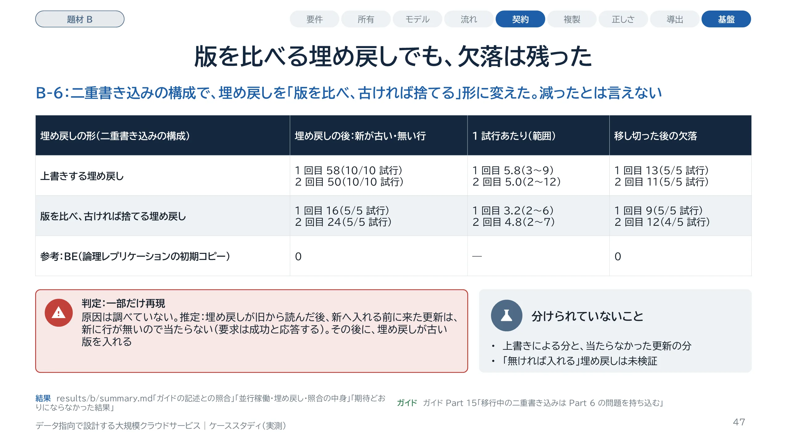
スライド 47 のテキストと解説
期待どおりにならなかった結果の 2 つ目です。ガイドは、埋め戻しが新しい値を古い値で上書きする問題に対し、版を比べて古ければ捨てる、と整理しています。二重書き込みの構成でこれを入れても、埋め戻しの後に、新が古いまま、または無い行が残りました。上書きする埋め戻しは 10 試行で 1 回目 58、2 回目 50。版を比べる埋め戻しは 5 試行で 16 と 24 です。1 試行あたりの件数の範囲は重なっていて、減ったとは言えません。移し切った後の新にも、応答済みの書き込みの欠落が 1 回目 9、2 回目 12 残りました。2 回目は 5 試行のうち 4 試行です。原因は調べていません。推定は、埋め戻しが旧から行を読んだ後、新へ入れる前に来た更新が、新に行が無いので当たらず、その後に埋め戻しが古い版を入れる、という経路です。この経路は切り分けていません。「無ければ入れる」形は未検証です。論理レプリケーションの BE は、埋め戻しの後の食い違いが 0 でした。
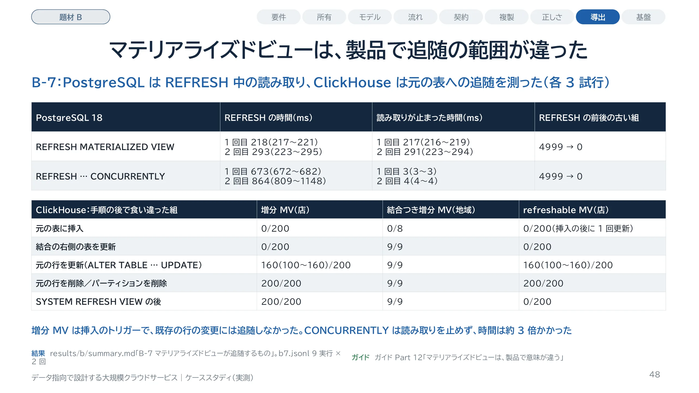
スライド 48 のテキストと解説
B-7 です。PostgreSQL 18 では、600,000 行を 50,000 組に集計したビューを、読み手 4 スレッドが読み続けました。通常の REFRESH の間、読み取りは REFRESH の時間とほぼ同じだけ止まりました。CONCURRENTLY では止まった時間は 3 ms と 4 ms でしたが、所要時間は通常の約 3.1 倍と 3.0 倍でした。ClickHouse は、店 200 件の 100,000 行で、ビューの中身を、元の表への同じ問い合わせと比べました。増分のビューは、挿入には追随し、食い違いは 0 でした。元の行の更新、削除、パーティションの削除には追随せず、削除の後は 200 店すべてが食い違いました。結合つきの増分ビューは、結合の右側の表を更新すると 9 地域すべてが食い違いました。refreshable は、SYSTEM REFRESH VIEW の後に食い違いが 0 に戻りました。食い違いの数は 2 回とも同じです。
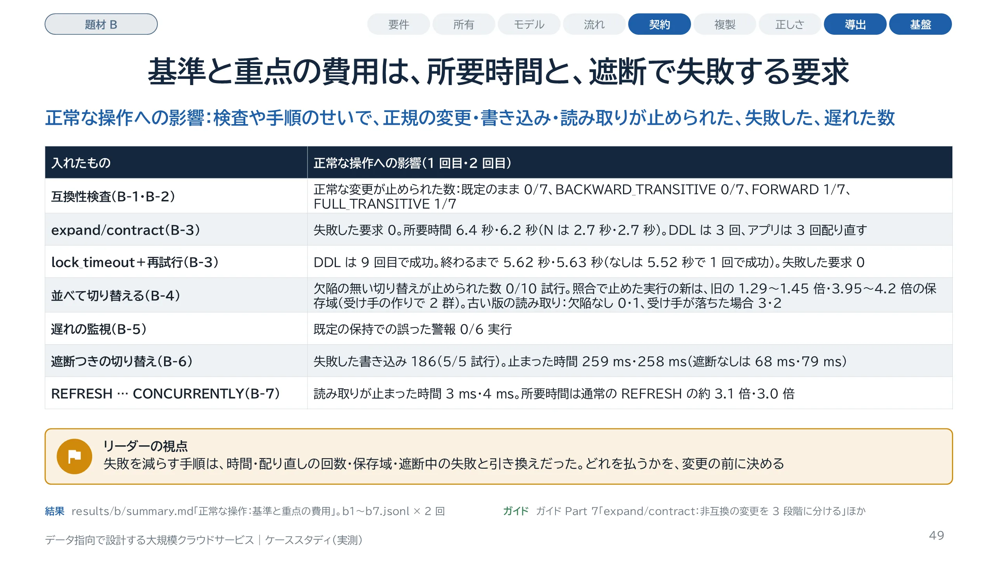
スライド 49 のテキストと解説
正常な操作が払ったものです。互換性検査は、既定のままでも BACKWARD_TRANSITIVE でも、正常な変更 7 件を 1 件も止めませんでした。FORWARD と FULL の系統では、additionalProperties を false にした JSON Schema への任意プロパティの追加が止められました。expand/contract は、失敗 0 の代わりに、所要時間が N の 2.7 秒から 6 秒台になり、DDL とアプリの配り直しが 3 回ずつ要りました。lock_timeout と再試行は、DDL が 9 回目まで成功しません。並べて切り替える手順は、欠陥の無い切り替えを止めませんでしたが、並べている間の保存域が要ります。遮断つきの切り替えは、186 件の書き込みが失敗し、止まった時間は遮断なしより長くなりました。CONCURRENTLY は所要時間が約 3 倍です。時間は、同じ環境の中の相対比較です。
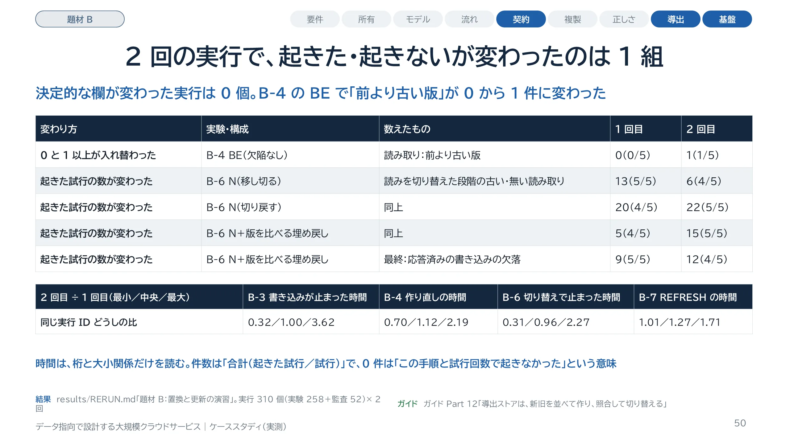
スライド 50 のテキストと解説
2 回の実行の比較です。題材 B は 310 個（実験 258＋監査 52）の実行を 2 回、最初から流しました。登録の可否、取ったロック、表の書き換え、切り替えたか止めたか、といった決定的な欄が変わった実行は 0 個でした。構成とケースと数えたものの組は 247 個で、0 件か 1 件以上かが変わったのは 1 組だけです。B-4 の並べて切り替える構成で、前より古い版の読み取りが、1 回目は 0、2 回目は 5 試行のうち 1 試行で 1 件でした。1 回目だけを見ていれば「並べれば読み取りの異常は出ない」と書いていたはずです。2 回とも起きたが、起きた試行の数が変わった組は 4 個で、すべて B-6 の二重書き込みの構成です。時間の揺れは表のとおりで、書き込みが止まった時間は、同じ実行どうしの比で 0.32 倍から 3.62 倍まで開きました。中央は 1.00 です。この幅があるので、時間は桁と大小関係だけを読んでください。
スライド 51 のテキストと解説
ガイドの記述との照合です。判定は、結果のファイルの数から付けています。表は 53 行で、一致が 30 行です。一致したのは、Avro の既定値つきの追加と削除、既定のモードが BACKWARD であること、直前の版とだけ比べると古いデータを読めなくなること、DDL のロックと書き換え、expand/contract、作り直しの前提の ① から ④、マテリアライズドビューの違いなどです。保持と削除の印は、時間を縮めた条件での再現です。条件つきは 2 つあります。Avro の別名つきの名前の変更は、読むライブラリでは読めましたが、Redpanda のレジストリは BACKWARD で拒否しました。Protocol Buffers の削除は、受け手が使っているフィールドだと黙って既定値で埋まりました。実行によって変わったのは、並べて切り替える手順です。一部だけ再現は、版を比べる埋め戻しです。ガイドが未確認としていた 2 点は、今回実測しました。全部の行は summary にあります。
スライド 52 のテキストと解説
原因を調べていない結果をまとめます。1 つ目、Avro の別名つきの名前の変更を、Redpanda のレジストリは BACKWARD で拒否しました。レジストリが別名を互換性の判定に使っていないように見えますが、調べていません。2 つ目、列の型を変えた後、読み手の要求が 2 回とも 12 件、SQLSTATE 0A000 で失敗しました。エラーの文言は記録していません。3 つ目、表を書き換えない varchar から text への変更でも、読み取りが 76 ms 止まりました。書き込みは 11 ms と 12 ms です。4 つ目、少しずつ切り替える間の、前より古い版の読み取りです。5 つ目、版を比べる埋め戻しでも残った欠落です。このほか、Redpanda が表示した delete.retention.ms の既定は -1 で、この既定で削除の印がいつ消えるか、消えないかは、数十秒の観測では分かりません。推定は、確かめた事実ではありません。自分の環境で確かめる項目として扱ってください。
スライド 53 のテキストと解説
限界と未検証です。実験は 1 台の上の、1 ノードのブローカーと PostgreSQL で行いました。表は 5 万行から 60 万行、イベントは 1 回の実行で 1 万から 2 万件です。保持の時間は、7 日を 5 秒に、1 日を 3 秒に縮めました。既定の時間そのものは待っていません。スキーマレジストリは Redpanda の内蔵のものだけで、受け手は Python の実装だけです。B-4 の新旧のストアは同じ PostgreSQL の別の表、B-6 の移行先は同じ版の PostgreSQL で、別の製品への入れ替えは測っていません。B-6 の負荷は、1 つの行を 1 つの書き手だけが更新する作りなので、並行更新が逆順に届く型は起きません。遮断は、アプリのロールから書き込みの権限を外す形です。受け手の「落ちる」は、コミットの後、オフセットを記録せずに止める形で、プロセスの強制終了ではありません。右の未検証は、ガイドの記述のうち今回確かめられなかった点です。
スライド 54 のテキストと解説
題材 B のまとめとして、設計レビューに持ち帰る問いです。1 つ目、互換性検査のモードは、読み直す範囲に合っているか。既定は直前の版とだけ比べました。2 つ目、検査を通っても受け手が誤る変更を、検査の外で見ているか。Protocol Buffers の 3 件がそうでした。3 つ目、DDL に lock_timeout と再試行があるか、列の変更を段階に分けているか。4 つ目、導出ストアを差し替える前に、新旧を照合しているか。照合は欠陥のある受け手への切り替えを止めましたが、並べて切り替えても、古い版の読み取りが 1 件出た実行がありました。5 つ目、ログから作り直す前提、つまり保持、位置つきのスナップショット、削除の印の期限を確かめたか。6 つ目、記録のシステムの移行で、二重書き込みに頼っていないか、シーケンス、遮断、切り戻しの手段を持っているか。どの手順にも費用がありました。次の Part 3 は、題材 C、ログ・分析の費用と性能です。
スライド 55 のテキストと解説
Part 3 は題材 C、ログ基盤と分析基盤の費用と性能です。問いは、どの持ち方が何を払うか、です。架空の宅配注文サービスの注文イベントのログを、行指向の PostgreSQL、列指向の ClickHouse、ファイルの DuckDB と Parquet に入れて比べました。実験は C-1 から C-6 の 6 つで、1 回あたり 522 実行を、最初から 2 回流しています。先に結論を言うと、持ち方ごとに払うものが違いました。上流のスキーマが揺れたときの既定の動きは製品で違い、エラーなしで値が変わる場面がありました。テレメトリの送信では、Kafka を間に置いても失う設定がありました。この Part の時間の数字は、すべて同じ機械・同じデータの中の相対比較です。製品の優劣は断定しません。どの形の問い合わせで、どちらに差が出たかを見てください。
スライド 56 のテキストと解説
題材 C の全体です。データは、注文イベントのログで、1 行が 1 イベント、23 列です。生成器が乱数の種を固定して作り、問い合わせの正解も生成器から作りました。製品は PostgreSQL 18.7、ClickHouse 26.8、DuckDB 2.0.0 です。C-6 だけ、OpenTelemetry Collector 0.165.0 と、Kafka の役の Redpanda を使います。表は 6 つの実験と、1 回あたりの実行の数です。合計は 522 実行で、これを最初から 2 回流しました。判定器の監査は 53 ケースで、2 回とも 53 が合格です。構成の呼び名は下の 3 つです。N は素朴な作り、B は再実行しても同じ結果になる取り込み、BE はそれに題材 C の重点を 3 つ足したものです。題材 C の構成は、1 本の流れの組み替えではなく、実験ごとの選択の組み合わせです。除去実験の表は、対応する実験の数字から作っています。次から、C-1 の結果です。
スライド 57 のテキストと解説
C-1 の容量と取り込み時間です。最大の規模、300 万行の結果を載せました。容量は 2 回の実行で同じ値でした。PostgreSQL は 718.4 MB で、元の CSV の 1.33 倍です。うち索引が 133.0 MB で、索引を除くと 1.08 倍です。ClickHouse は 0.41 倍、Parquet は 0.31 倍でした。取り込みは各 5 試行の中央値と幅で、1 回目と 2 回目を並べています。大小の向きは 2 回とも同じでした。ただし、取り込みの中身は製品で違います。PostgreSQL の時間には、主キーと ts の索引の作成、VACUUM ANALYZE が入っています。ClickHouse は OPTIMIZE FINAL までです。どれも、サーバーが手元の同じ CSV を直接読む形です。データは生成器が作った一様に近い分布で、圧縮の効き方はデータに強く左右されます。この比を、ほかの環境やデータに当てはめないでください。次は問い合わせの時間です。
スライド 58 のテキストと解説
C-1 の問い合わせ時間です。300 万行での 2 回目の値で、5 試行の中央値です。毎回、結果を生成器の正解と突き合わせました。不一致は 0 件です。キーで 1 行を読む検索は、索引のある PostgreSQL が 0.45 ミリ秒、ClickHouse が 73.0 ミリ秒でした。1 回目も 0.48 と 73.0 で、同じ向きです。全行を走査する店舗ごとの集計は逆で、PostgreSQL 208、ClickHouse 80.3、DuckDB 8.91 ミリ秒でした。1 回目は 226、84.5、8.96 です。キーでない列の絞り込みは差が小さく、PostgreSQL は ClickHouse の 1.6 倍、1 回目は 1.8 倍でした。これは製品の優劣ではありません。ClickHouse と Parquet には event_id の索引が無く、PostgreSQL は点と範囲で索引を使います。経路も違うので、数ミリ秒以下の差は区別できません。
スライド 59 のテキストと解説
列指向が買うものと払うものです。上の 3 つは、23 列のうち 2 列を使う集計が読んだ量です。PostgreSQL は表の 100% を読みました。ClickHouse は圧縮前の大きさの 5.4%、Parquet はファイルの 5.6% で、1 回目は 5.5% でした。測り方は製品ごとに違うので、割合どうしを細かく比べることはできません。下の表は、500 行を 1 行ずつ書く時間と、まとめて 1 回で書く時間の比です。ClickHouse は、設定の表示では async_insert が 1 で、既定のまま完了を待つと 469 倍と 470 倍でした。async_insert を 0 にすると 43 倍と 42 倍です。待たずに応答する設定は短いのですが、応答の直後に読めた行は 500 行のうち、1 回目 330 から 460 行、2 回目 314 から 350 行でした。行指向の PostgreSQL でも、1 行ずつは 32 倍と 35 倍です。
スライド 60 のテキストと解説
1 つの PostgreSQL で、業務の読み書きと集計を兼ねたときの結果です。1 つの接続が主キーの検索と 1 行の挿入を交互に 6 秒続け、その横で店舗ごとの集計を 0 本、1 本、4 本並べました。各 5 試行で、表は主キーの検索の p95 です。集計 1 本では、どの規模でも 1.5 倍を超えませんでした。4 本並べると、100 万行と 300 万行で超えました。300 万行では 1 回目 1.10 から 4.95 ミリ秒、2 回目 1.00 から 4.82 ミリ秒です。失敗した検索と挿入は 0 件でした。ガイドの記述は、一部だけ再現、という判定です。ガイドは、兼ねてよい規模の境目を実測で示す、と書いていましたが、線は引けていません。最大の表でも 585.4 MB で、コンテナのメモリに収まるからです。もう 1 つ、挿入の時間は試行ごとに 2 つの水準に分かれました。原因は調べていません。次から C-2 です。
スライド 61 のテキストと解説
C-2 の前半、型つきの列に分けて入れる場合と、JSON のまま入れる場合の比較です。50 万行、23 列で、各 5 試行、2 回目の値です。見るのは、同じ製品の中の 2 行の差です。PostgreSQL は、jsonb の 1 列にすると、容量が 97.6 から 315.5 MB に、店舗ごとの集計が 40.2 から 1842 ミリ秒になりました。ClickHouse の JSON 型は、容量が 37.0 から 43.9 MB、集計が 17.5 から 33.9 ミリ秒です。DuckDB で NDJSON を直接読む形は、取り込みが要らない代わりに、毎回ファイルを読んで型を判定します。どれも索引なしで、問い合わせの結果は正解と一致しました。入力は CSV で 89.9 MB、NDJSON で 212.2 MB です。JSON のまま持つ作りが買うものは、上流のスキーマが揺れても取り込みが止まらないことです。それが本当に得かを、次のスライドから見ます。
スライド 62 のテキストと解説
C-2 の後半、上流のスキーマが揺れたときの結果です。30,000 行、7 項目の NDJSON の、後ろの 6,000 行だけ形を変えました。表は、製品の既定のまま型つきの表へ取り込む、素朴な作りの結果です。取り込みの作りは、下の注記のとおりです。7 ケースのうち 4 ケースで、結果が製品の間で違いました。たとえば項目が消えると、PostgreSQL は取り込みを止め、ClickHouse は黙って 0 で埋め、DuckDB は上流の意味どおり NULL として読めました。整数が小数に変わると、DuckDB だけがエラーにせず丸めました。結果は 2 回の実行で同じです。ガイドは、動きを決めていないと実装の偶然で決まる、と書いています。その記述と一致しました。ClickHouse の列を Nullable にした場合は測っていません。
スライド 63 のテキストと解説
揺れのある 117 実行を、ガイドの 4 つの動きに分けて数えました。3 製品を合わせて 17 通りの作りに 7 ケースを流し、対象外の 2 つを除いた数です。止める動きは 18 実行です。揺れた 6,000 行だけでなく、揺れていない行も入らず、被害は 24,000 行でした。保留する動きは、BE の作りの 15 実行です。保留は 6,000 行で、揺れていない行の被害は 0 行でした。ただし本体の集計は、保留の分だけ正解と違います。黙って落とす、埋める、変える動きは 31 実行です。このうち合計が正解と同じ値を返したのは 4 実行で、その 4 実行とも平均は違いました。そのまま通す作りは 42 実行で、取り込みが止まったのは 0 でした。その代わり、読む側でエラーや、エラーなしの違う値が出ました。4 つとも、ガイドの記述と一致という判定です。結果は 2 回の実行で同じでした。次は、保留の構成を除去実験で見ます。
スライド 64 のテキストと解説
BE の重点 E-C2 の除去実験です。BE は、必須の 6 項目がそろい、整数の項目が JSON の整数である行だけを本体の表に入れます。それ以外は理由を付けて保留の表に入れ、知らないキーは別の列に残します。揺れのある 7 ケースで、BE は 3 製品とも、保留が 5、正しく読めたのが 2 でした。E-C2 を外して既定の取り込みに戻すと、PostgreSQL は 5 ケースで止まり、ClickHouse は 4 ケースで、黙って落とすか、0 で埋めました。揺れていない行まで欠けた実行は、0 から、5、2、1 に増えます。正常な変更も確かめました。項目が増える、消える、の 2 ケースは、3 製品とも保留 0 行でした。費用もあります。数字の文字列のように、値としては読める揺れも、6,000 行とも保留に回りました。保留を見る人と手順が要ります。検査の決まりは実験の前に決めた 1 つの形で、ほかの決まりは測っていません。
スライド 65 のテキストと解説
JSON の型、寛容な読み方、エラーを飛ばす指定で、期待どおりにならなかった結果です。1 つ目、ClickHouse の JSON 型は、文字列で送った日時を DateTime として持ちました。最初に書いた問い合わせは、文字列として読む指定で、エラーにならずに全行 NULL を返しました。照合の不一致で気づきました。2 つ目、同じ JSON 型の値を Float64 に変換すると、項目の無い行が 0 になりました。合計は正解と同じで、平均だけが違います。3 つ目、変換できない値を NULL にする寛容な集計は、14 実行で、エラーなしに違う値を返しました。DuckDB の read_json は整数の列の小数を丸め、自動判定は既定では先頭の一部の行だけで型を決めます。PostgreSQL の COPY の ON_ERROR ignore が飛ばすのは、型に変換できない値の行だけでした。結果は 2 回とも同じです。どれも、エラーが出ないので、照合が無ければ気づけません。
スライド 66 のテキストと解説
C-3 の保持です。PostgreSQL は、DELETE の後も VACUUM の後も、容量は 240.2 と 240.1 MB のままでした。VACUUM FULL で 160.0 MB になります。10 日ごとのパーティションを DROP する形は、44.6 と 50.3 ミリ秒で、直後に容量が減りました。ClickHouse の軽量な削除も、直後は 73.8 MB のままで、OPTIMIZE FINAL の後に 49.2 MB です。DuckDB の表は、DELETE と CHECKPOINT の後、ファイルが大きくなりました。一方、ClickHouse の ALTER TABLE DELETE は、直後に減りました。日ごとのファイルを消す形は、1 回目 56.4、2 回目 17.1 ミリ秒で、回によって値が違います。軽量な削除と DuckDB の表の 1 回目の時間は、結果のファイルから数えた値です。落としている間の読み書きへの影響は測っていません。
スライド 67 のテキストと解説
C-4 は、同じ範囲のバッチをもう一度流す実験です。1 日分 20,000 行のバッチを 2 回流し、表にあるべき行を生成器の正解と比べました。場面は 3 つです。同じ入力で 2 回、2 回目は訂正後の入力、1 回目が半分で止まって流し直す、です。表は PostgreSQL の結果で、件数は 2 回の実行で同じでした。キーなしの INSERT は、同じ入力で重複が 20,000 行です。主キーがあると 2 回目がエラーで全体が戻るので、訂正と、止まった 1 回目の残りが入りません。UPSERT は、同じ入力と流し直しでは誤り 0 件ですが、訂正後の入力では余分が 100 行残りました。3 つの場面とも 0 件だったのは、日の範囲を消して入れ直す作りです。3 製品 × 3 場面の 15 実行で、誤りは 0 件でした。0 件は、この手順と試行で起きなかった、という意味です。同時に 2 つの実行が走る場合は測っていません。
スライド 68 のテキストと解説
ガイドは Airflow の文書を引いて、INSERT ではなく UPSERT を使う、と書いています。判定は、条件つき、でした。同じ入力と値の訂正では合いますが、訂正で入力から消えた 100 行は、UPSERT では表に残りました。DuckDB の INSERT OR REPLACE も同じです。ClickHouse の ReplacingMergeTree は、同じ入力を 2 回流した後、ふつうの SELECT では重複が 20,000 行見えました。FINAL を付けるか、OPTIMIZE FINAL の後は 0 件です。ただし消えた行は、FINAL でも 100 行残りました。最後はガイドの悪い例です。now の前 24 時間を INSERT する処理を 6 時間後にもう一度流すと、重なった 18 時間分の 15,000 行が重複し、次の日の 6 時間分の 5,000 行が余分に入りました。件数は 2 回の実行で同じです。
スライド 69 のテキストと解説
C-5 の索引の費用です。PostgreSQL の 100 万行の表で、索引を先に作ってから取り込み、続けて 20,000 行を 100 行ずつ挿入しました。各 5 試行で、1 回目と 2 回目の中央値を並べています。顧客 1 人の絞り込みは、索引なしの 42.5 と 49.0 ミリ秒が、1 本で 0.45 と 0.56 ミリ秒になりました。払ったのは、一括の取り込みの時間と領域です。取り込みは 1 本で 1.59 倍と 1.60 倍、3 本で 2.39 倍と 2.65 倍でした。索引の容量は 22.9 から 98.3 MB に増えています。一方、100 行ずつの挿入は、索引なしと 1 本とで試行の範囲が重なり、差は言えません。3 本では 1.20 倍と 1.13 倍でした。ガイドの記述とは、一括の取り込みと領域で一致、という判定です。索引の有無にかかわらず、読み取りの結果は正解と一致しました。索引を作っている間の問い合わせの遅さは、測っていません。
スライド 70 のテキストと解説
索引の効果が、時間の差として言えなかったものと、2 回の実行で判定が変わったものです。判定が変わったのは、スキップ索引の件数と金額の 1 組だけです。PostgreSQL の INCLUDE つきの索引は、実行計画が Index Only Scan になり、領域は 16.8 から 40.7 MB に増えました。しかし読み取りの時間は、列を持たない索引と範囲が重なり、2 回とも差は言えません。ClickHouse のスキップ索引は、読む行を 1,020,000 から 73,728 に減らしました。件数と金額の時間は、1 回目は短く、2 回目は範囲が重なりました。実行によって変わった結果です。全列の行の取得は、2 回とも長くなりました。DuckDB の索引は、件数と金額の実行計画には現れず、ファイルだけが増えました。行の取得は 2 回とも短くなりましたが、その実行計画は記録していないので、索引が使われたかは分かりません。2 回目の C-5 は空きメモリが少なく、同じ条件とは言えません。
スライド 71 のテキストと解説
C-6 は、OpenTelemetry Collector の送信で、受け付け済みのログを失う場面です。送り手が 100 要求、計 2,000 件のログを送り、障害は 21 から 60 番目の要求の間だけ入れました。送り手は再送しません。メモリのキューは、下流の停止中に Collector を強制終了すると、1 回目 800 から 820 件、2 回目 800 件を失いました。ディスクのキューは、同じ場面で 0 件でした。3 試行で起きなかった、という意味です。再試行の上限より長い停止では、どちらも 500 件台から 600 件台を失いました。キューがあふれた場面は、受け付け済みの欠落は 0 件で、新しい要求が HTTP 503 で断られました。失うかどうかは、送り手が再送するかで決まります。正常時の遅れの p50 は、メモリが 0.95 と 1.08 ミリ秒、ディスクが 8.50 と 24.0 ミリ秒でした。時間は縮めてあり、既定の再試行 5 分は待っていません。
スライド 72 のテキストと解説
Kafka を間に置く設計です。Kafka の役は Redpanda の 1 ノードです。ガイドは、下流が止まると、戻るまで Kafka にたまる、と書いています。判定は、条件つき、でした。読む側の Collector が既定のままだと、メッセージを先に読み出して印を付け、自分のメモリのキューで再試行します。その Collector を強制終了すると 820 件を失いました。処理の後で印を付ける設定では 0 件です。逆に、トピックの保持の 2 秒より長い停止では、後で印を付ける設定が 780 件を失い、既定は 0 件でした。もう Kafka の外にあったためです。ブローカーを一時停止して戻しただけの場面は、実行によって変わりました。1 回目は 3 試行とも 0 件、2 回目は 3 試行のうち 1 試行で 20 件を失いました。原因は特定していません。重複も届いているので、受け手に重複を捨てる仕組みが要ります。Apache Kafka では流していません。
スライド 73 のテキストと解説
題材 C を 2 回流して、変わった点です。実行 ID の集合は 2 回で同じで、575 個の実行を比べました。決定的な欄が 1 つでも変わったのは 16 実行で、すべて C-6 でした。C-6 の障害は要求の件数を合図に入れているので、件数は決定的になるはず、と扱っていました。実際には、あふれ、再試行の時間切れ、強制終了、ブローカーの停止の件数が変わりました。その後の結果が、キューが空く速さ、再試行の時刻、強制終了の瞬間に Collector と Kafka が持っていた分に頼るためです。起きたか起きなかったかが変わった組は、194 個のうち 1 個でした。ブローカーを戻しただけの場面です。C-2 の揺れの結果と、C-4 の件数は変わっていません。時間は表のとおり揺れました。同じ実行どうしの比で、最大 4.90 倍のものがあります。時間の大小は、2 回とも同じ判定になったものだけを言っています。
スライド 74 のテキストと解説
ガイドの記述との照合です。判定は、結果のファイルの数から機械的に付けています。42 行のうち、一致が 16、実測が 9、未検証が 7 でした。一致したのは、行指向と列指向の 4 つの記述、スキーマが揺れたときの 4 つの動き、範囲を置き換える再実行です。一部だけ再現は 2 つあります。1 つの DB で兼ねたときの影響は、集計を 4 本並べた 100 万行と 300 万行でだけ出ました。INCLUDE つきの索引は、計画と領域は記述どおりでしたが、読み取りの時間の差は言えませんでした。条件つきも 2 つです。UPSERT は、入力から消えた行を残しました。Kafka を間に置く設計は、読む側の設定によって失いました。Kafka でもまだ失う場面は、実行によって変わりました。保持の超過などで失う点は 2 回とも一致で、ブローカーを戻しただけの場面が違いました。未検証は、次のスライドにまとめます。全部の行は summary の照合の表にあります。
スライド 75 のテキストと解説
題材 C の限界と未検証です。まず時間の測定の限界です。1 台、8 コアの WSL2 の Docker の上の、1 ノードの製品です。データは最大でも 300 万行、CSV で 542.0 MB で、どの規模もメモリに収まります。問い合わせは暖機のあとで測り、OS のページキャッシュは捨てていません。時間はクライアントで測り、製品ごとに経路が違います。数ミリ秒以下の差は、経路の差と区別できません。設定はメモリまわりの上限のほかは、ほぼ既定で、使う CPU の数も違います。並び順や索引は、ふつうに書く形を 1 つ選んだもので、選び方で結果は変わります。さらに、2 回の実行で空きメモリが違いました。右は未検証です。兼ねてよい規模の境目、冷えたキャッシュ、複数ノード、クラウドの製品、索引を作り直している間の遅さ、Collector の既定の時間などです。公開のデータセットも使っていません。0 件は、起きないことの証明ではありません。
スライド 76 のテキストと解説
題材 C から、設計レビューに持ち帰る問いです。持ち帰るのは時間の値ではありません。何を確かめてから決めるか、です。1 つ目、分析を分ける前に、問い合わせの形と、同時に走る本数を測ったか。この実験では、集計 1 本では検索の p95 は 1.5 倍を超えませんでした。2 つ目、上流のスキーマが揺れたときの動きを決めたか。既定の動きは製品で違いました。3 つ目、エラーなしで変わる値を、照合で見つけられるか。合計が合っていても、平均が違う実行がありました。4 つ目、保持はパーティションの単位で落とせるか。5 つ目、バッチは範囲の置き換えで流し直せるか。6 つ目、索引は実行計画と、自分の負荷での測定で確かめたか。7 つ目、テレメトリを失う場面と、読む側の設定を確かめたか。どの問いも、自分の環境で測り直す前提で使ってください。以上が題材 C です。次の Part は題材 D、整合性の異常の再現です。
スライド 77 のテキストと解説
Part 4 は題材 D、整合性の異常の再現です。問いは、どの設定がどの異常を許し、何を失うか、そして同じ名前の設定で製品ごとに結果が違うか、です。ガイドの Part 8「複製と分割」と Part 9「正しさの水準を決める」の記述を、PostgreSQL 18.7、MySQL 8.4.13、CockroachDB v26.4.0 で確かめました。先に結論を言います。同じ名前の分離レベルでも、許した異常は製品で違いました。ロストアップデートは、PostgreSQL の Read Committed と、MySQL の既定の Repeatable Read で、エラーなしに起きました。防ぐ手段はどれも効きましたが、再試行や、正常な要求の失敗という費用が出ました。複製では、同期スタンバイを名指ししない設定で、経路が切れた後の応答済みコミットを全部失いました。損失ゼロの設定は、同期先が止まると書き込みが返りませんでした。ガイドの 41 の記述と照合し、食い違いは 0 個、条件によるものが 1 個です。
スライド 78 のテキストと解説
題材 D の実験は 7 つです。D-1 から D-3 は、1 台のデータベースの中の話で、ガイドの Part 9 に対応します。D-4 から D-7 は、PostgreSQL のプライマリとスタンバイの複製の話で、Part 8 に対応します。表の右の列は、2 回目の結果のファイルの実行の数です。1 回目も同じ実行 ID の集合でした。D-1 の 684 回は 228 セル × 3 試行で、結果のファイルにはこのほかに、サーバーが表示した水準を記録した行が 3 行あります。数えるものには、異常や損失だけでなく、再試行の回数、正常な要求の失敗、書き込みが返らない、といった正常な操作への費用を入れました。下の注記は構成の呼び名です。N は既定のままの素朴な作り、B は共通の基準 B5 の同期の複製を入れた構成、BE はそこに題材 D の重点を 3 つ足した構成です。判定器は、誤りを仕込んだデータで監査し、65 ケースすべて合格でした。次から、D-1 の結果を見ます。
スライド 79 のテキストと解説
D-1 の結果です。ガイドが名前を挙げた 5 つの異常について、製品と水準ごとに、起きたか防いだかを並べました。全部で 684 回、228 セルで、試行のあいだで判定が割れたセルはありません。見てほしいのは Repeatable Read の行です。PostgreSQL と CockroachDB は、ロストアップデートをエラー 40001 で防ぎました。MySQL の Repeatable Read は既定の水準ですが、ロストアップデートが起きました。ライトスキューは、3 製品とも Repeatable Read では起き、Serializable で防ぎました。防ぎ方も違います。PostgreSQL と CockroachDB は失敗を返し、MySQL の Serializable は待たせたうえでデッドロックのエラー 1213 を返しました。Hermitage の表の 100 セルと照合し、食い違いは 0 個です。「防いだ」は、この手順では起きなかったという意味です。
スライド 80 のテキストと解説
Repeatable Read を 3 製品で比べます。PostgreSQL は、ロストアップデートの P4 を、待ちの後のエラー 40001 で防ぎました。ライトスキューは起きました。MySQL 8.4.13 では既定の水準です。読み取りだけの手順は防ぎましたが、トランザクションの中で自分の書き込みを挟むと、MAVW、GSW、P3W、PMPW2 が起きました。MAVW では、1 回の SELECT の結果に、別のトランザクションの更新の前の値と後の値が混ざりました。P3、P3W、MAVW、PMPW2 は、このケーススタディで足した手順です。CockroachDB v26.4.0 は、既定のクラスタ設定では、REPEATABLE READ を指定してもサーバーの表示は serializable でした。設定を有効にすると表示が repeatable read になり、P4 を防ぎ、ライトスキューは起きました。ガイドが「食い違い、理由は未確認」と書いた点の実測です。
スライド 81 のテキストと解説
D-2 は、ロストアップデートが並行の負荷でどれだけ起きるかです。在庫を読み、1 を引いて書き戻す処理を、1 回 400 件、種を固定して 5 試行ずつ流しました。件数は 5 試行の合計で、「1 回目・2 回目」の順です。PostgreSQL の既定の Read Committed では、並行度 16 で 1297 件と 1318 件の更新が消えました。MySQL の既定の Repeatable Read でも、1606 件と 1582 件が消えました。どちらも 5 試行すべてで起き、エラーは返っていません。並行度 1 を含む MySQL の Repeatable Read の合計は、応答済み 6000 件のうち 2449 件と 2417 件です。防いだ水準では 0 件でしたが、再試行が出ました。p95 は 2 回目の値で、同じ環境の中の相対比較です。CockroachDB は中継を通るので、時間をほかの製品と直接は比べられません。発生率は、この負荷での値です。
スライド 82 のテキストと解説
D-3 は、防ぎ方ごとの費用です。PostgreSQL で、在庫より要求が多い条件にしました。1 回 400 件のうち、正しくは 240 件が引き当てられます。表は並行度 16 の 5 試行の合計で、2 回で違う数は「1 回目・2 回目」です。素朴な作りは、ロストアップデートが 1031 件と 987 件、売り越しが 800 件でした。CHECK 制約を足しても、売り越しは 800 件のままです。読んで書き戻す形では、制約は更新が消えることを検出しませんでした。アトミックな更新と SELECT FOR UPDATE は、再試行なしで 0 件です。バージョン列と、分離レベルを上げる手段は、0 件の代わりに再試行が出て、p95 が大きくなりました。最後の行が正常な操作への費用です。Serializable で再試行しないと、引き当てられるはずの要求が 261 件と 267 件、失敗しました。時間は 2 回目の値で、同じ環境の中の相対比較です。
スライド 83 のテキストと解説
D-3 のもう 1 つの負荷は、ライトスキューです。80 のエリアに稼働中の配達員が 2 人ずついて、2 人が同時に休憩を申請します。正しくは、各エリアで 1 件だけ通ります。違反は、稼働中が 0 人になったエリアの数で、5 試行の合計です。素朴な Read Committed では、並行度 4 で 399、並行度 16 で 347 と 350 のエリアが違反しました。スナップショット分離の Repeatable Read は、40001 が返れば再試行する作りでしたが、400、341 と 355 で、エラーは 1 回も返りませんでした。防いだのは 2 つです。前提にした行のロックは、違反 0、再試行 0 でした。Serializable と再試行は、違反 0 の代わりに、再試行が並行度 16 で 2493 回と 2478 回、p95 が 256.61 ms でした。再試行しない Serializable は、違反は 0 ですが、1 件も通らなかったエリアが出ました。
スライド 84 のテキストと解説
ここから複製です。D-4 は、PostgreSQL 18 のプライマリとスタンバイ 1 台で、プライマリを強制終了してスタンバイを昇格したとき、応答済みなのに失われたコミットを数えました。このスライドは、経路が先に切れていた場合で、各 3 試行です。synchronous_standby_names が空、つまり既定のときは、synchronous_commit の 5 つの値のどれでも、切った後に 200 件が応答され、その 200 件を毎回失いました。合計は 600 件です。on でも remote_apply でも同じでした。名指ししても、off と local は 600 件を失いました。失わなかったのは、名指ししたうえでの remote_write、on、remote_apply だけです。その代わり、この 3 つは、経路が切れた後に書き込みが止まりました。2 回の実行で結果は同じです。失われる件数は、切った後に応答された件数そのもので、割合ではありません。
スライド 85 のテキストと解説
同じ D-4 で、経路を切らずに、負荷をかけたままプライマリを強制終了した場合です。失われるのは、強制終了の瞬間にスタンバイへ届いていなかった分だけです。そのため、試行によって 0 件にも 1 件以上にもなります。off は 2 回とも 5 試行すべてで失いました。1 回目の試行ごとの件数は、名前が空のとき 45 件から 1232 件まで開いています。注意が要るのは local です。名前が空の local は、1 回目は 1 試行で 3 件を失い、2 回目は 0 件でした。「起きた／起きなかった」が 2 回で変わった、題材 D でただ 1 つの組です。名前が空の on、remote_write、remote_apply は 2 回とも 0 件でした。これは、この試行では届いていたという意味で、失わない設定だという意味ではありません。経路が切れていれば全部失うことは、前のスライドのとおりです。
スライド 86 のテキストと解説
D-5 は、損失ゼロの設定の費用です。前の 2 枚で失わなかった設定、つまり on と同期スタンバイの名指しで、スタンバイを止めました。書き込みを 1 件出し、クライアントからは打ち切らずに観測しました。12 試行すべてで、観測の時間の間は返りませんでした。60 秒の観測は 3 試行です。永久に待つことを確かめたものではありません。待ちの間、読み取りとロールバックは返りました。待っている行は、ほかのセッションから見えませんでした。下の表は抜け出し方です。スタンバイを起動し直すと、1 秒未満で返りました。注意は下の 2 行です。待ちをキャンセルすると、クライアントには成功が返り、行はプライマリに残ります。待ちの最中にプライマリを再起動すると、クライアントにはエラーが返りますが、行はコミット済みでした。応答が無いことは、書かれていないことを意味しません。
スライド 87 のテキストと解説
D-6 は古い読み取りです。プライマリに 1 行を書き、応答を受けた次の文で、スタンバイから同じ行を探しました。非同期では、遅れを足さなくても 600 件すべてが読めませんでした。同期の on は、遅れが無ければすべて読めましたが、適用を 200 ms 遅らせると 600 件すべて読めませんでした。remote_apply は、どちらの条件でも 0 件でした。ここまでは 2 回とも同じです。次に遅さです。PostgreSQL の文書は、remote_apply のコミットの遅れはほかの値よりずっと大きいと書いています。実測では条件によりました。適用が遅れない条件では、p50 は on と差が出ませんでした。適用を 200 ms 遅らせた条件では、1 回目 202.03 ms、2 回目 201.9 ms で、適用の遅れの分だけ増えました。ガイドとの照合で「条件による」とした 1 個です。時間は同じ 1 台の上の相対比較です。
スライド 88 のテキストと解説
D-7 は昇格の手順です。書き手 A がプライマリに 100 件を書いた後、データベースどうしの経路を切り、スタンバイを昇格しました。クライアントは両方に届きます。その後、新旧の両方へ 100 件ずつ書こうとします。各 3 試行で、2 回の実行で結果は同じでした。非同期で遮断なしの場合、旧プライマリは昇格後も毎回 100 件に応答しました。合計 300 件です。スプリットブレインの状態です。旧プライマリを起動し直して比べると、同じ ID で中身が違う行が毎回 68 件、合計 204 件ありました。昇格の前に旧プライマリを止めると、0 件でした。同期の設定では、遮断なしでも旧プライマリは応答せず、書き込みが止まりました。ただし、再起動後の旧プライマリにだけある行が、毎回 1 件ありました。遮断は docker stop による停止で、ネットワークやストレージの遮断は測っていません。
スライド 89 のテキストと解説
除去実験です。BE は、共通の基準 B5 の同期の複製に、重点の E-D1、E-D2、E-D3 を足した構成です。そこから要素を 1 つずつ外しました。数は 2 回目の値です。同期の複製を外すと、経路を切ってからの強制終了で 600 件を失いました。代わりに、コミットの p50 は 6.5 ms から 5.48 ms になり、経路が切れても書き込みは止まりません。再試行だけを外すと、異常は 0 件のままですが、正常な要求の失敗が、在庫で 267 件、休憩で 586 エリア出ました。Serializable を外すと、休憩の違反が 749 件戻りました。Repeatable Read に上げても 755 件です。ロックとバージョン列を外すと、ロストアップデートが 1397 件戻りました。遮断を外すと、非同期では旧プライマリが 300 件に応答しました。どの要素も、防ぐものと払うものが組になっています。次は、ガイドとの照合です。
スライド 90 のテキストと解説
ガイドの Part 8 と Part 9 の記述を、結果のファイルから機械的に判定しました。照合した記述は 41 個、食い違いは 0 個、条件によって一致しなかったものが 1 個です。その 1 個は、前に見た remote_apply の遅さです。表は、ガイドが「未確認」「題材 D で測る」と書いていた点の実測です。MySQL 8.4 系の Repeatable Read は、8.4.13 で、応答済み 6000 件のうち 1 回目 2449 件、2 回目 2417 件の更新が消えました。CockroachDB の Repeatable Read は、クラスタ設定しだいでした。同期先が落ちたときにコミットが返らない時間、非同期の昇格で失う件数も測りました。最後の行は、ガイドに記述が無い点です。食い違いが 0 個というのは、この手順と版での結果で、ガイドの記述を証明したわけではありません。次に、2 回の実行で変わった点を見ます。
スライド 91 のテキストと解説
実験は、同じコードで最初から 2 回流しました。構成、種、件数を合図にした障害の結果、判定、監査といった決定的な欄は、比べた 1289 個の実行と、記録の行 3 個のどれでも変わりませんでした。「起きた／起きなかった」を 271 の組で比べると、変わったのは 1 組です。名前が空で local、経路を切らずに強制終了したときの、失われた応答済みコミットで、1 回目は 3 件、2 回目は 0 件でした。どちらの回も、この条件で起きうるし、起きないこともある、と読みます。ほかに、起きた試行の数が変わった組が 3 つあります。どれも、クライアントに応答していないのにコミット済みで残った行です。応答が無いことは書かれていないことを意味しない、というガイドの記述と合います。件数の揺れも大きく、失われた応答済みの件数は、2 回の比が 0.54 から 17.00 でした。p50 の比が 0.28 まで開いた原因は調べていません。
スライド 92 のテキストと解説
限界と未検証です。左は測り方の限界です。D-1 は Hermitage と同じく試験の集まりで、証明ではありません。「防いだ」「0 件」は、この手順と試行の数では起きなかった、という意味です。D-2 と D-3 の発生率は、この負荷での値で、ほかの負荷には当てはまりません。D-5 の「返らなかった」は、観測した 15 秒や 60 秒の中の話です。D-7 の遮断は、旧プライマリの停止だけです。右は未検証です。いちばん大きいのは、1 台の上で動かしたことです。時計が共有されるので、時計のずれに由来する異常は測れません。リージョンをまたぐ障害も測れません。クラウドのマネージド製品、複数ノードの CockroachDB、MySQL の複製、スタンバイの OS が落ちる場合、自動の検知と昇格も測っていません。ガイドのこれらの記述は、文献によるままです。
スライド 93 のテキストと解説
設計レビューに持ち帰る問いを 6 つ並べました。1 つ目は、読んで書き戻す処理が無いか、既定の水準は何かです。PostgreSQL の Read Committed と MySQL の既定の Repeatable Read で、ロストアップデートがエラーなしに起きました。2 つ目は、強い水準を使う箇所に再試行があるかです。3 つ目は、不変条件が複数の行にまたがらないかです。ライトスキューは Repeatable Read でも起きました。4 つ目は、synchronous_standby_names が空でないかです。空なら、on と書いても、経路が切れた後の応答済みコミットを失いました。5 つ目は、同期先が止まったときに、書き込みが止まることを受け入れるかです。6 つ目は、昇格の前に旧プライマリを遮断する取り決めがあるかです。数は、この環境、この手順での結果です。次の Part 5 で、4 つの題材をまとめます。
スライド 94 のテキストと解説
Part 5 は、このケーススタディのまとめです。新しい測定は足しません。Part 1 から 4 の結果と、2 回の実行の比較を、題材をまたいで並べ直します。前半は 2 回の実行の比較です。決定的な欄が変わった実行の数、「起きた、起きなかった」が変わった組の数、件数と時間の揺れの幅を示し、「0 件」の読み方を確かめます。中ほどは、ガイドの記述との照合です。4 つの題材で 152 行ある照合の表を判定ごとに数え、ガイドに条件を足す点を一覧にします。続けて、共通の基準と重点が正常な操作に課した費用をまとめます。後半は、原因を調べていない点、限界、未検証の一覧です。最後に、設計レビューに持ち帰る問いと、結果の作り直し方を示します。数字はすべて、各題材の summary と RERUN から写しています。詳しい条件は、参照先の Part を見てください。
スライド 95 のテキストと解説
2 回の実行の比較です。同じ実行 ID どうしで、欄を 3 つに分けて比べました。時間と大きさ、並行の競合や時間に頼る数、それ以外の決定的な欄です。決定的な欄が 1 つでも変わった実行は、題材 D が 1,289 個のうち 0、題材 A が 198 個のうち 0、題材 B が 310 個のうち 0 でした。題材 C は 575 個のうち 16 個で、変わった欄は延べ 63 個です。16 個はすべて C-6、つまり Collector の送信の実験です。障害は要求の件数を合図に入れていますが、その後の結果は、キューが空く速さ、再試行の時刻、強制終了の瞬間に Collector と Kafka が持っていた分に頼ります。次に、構成、ケース、数えたものの組ごとに、合計が 0 か 1 以上かを比べました。変わった組は、D が 271 のうち 1、A が 670 のうち 18、B が 247 のうち 1、C が 194 のうち 1 です。
スライド 96 のテキストと解説
0 件と 1 件以上が、2 回の実行で入れ替わった例です。1 行目は題材 D です。同期スタンバイを名指しせず、synchronous_commit を local にした構成で、経路を切らずにプライマリを強制終了すると、失われた応答済みのコミットは 1 回目が 3 件で 5 試行のうち 1 試行、2 回目は 0 件でした。2 行目は題材 B です。新旧を並べて切り替える構成で、欠陥が無いのに、前より古い版の読み取りが 1 回目は 0 件、2 回目は 1 件出ました。3 行目と 4 行目は題材 A です。二重書き込みの順序の入れ替わりは 0 から 1 へ、変種のポーリングの最終状態の食い違いは 2 から 0 へ変わりました。5 行目は題材 C で、ブローカーを戻しただけの場面で、2 回目に 20 件を失いました。もし 1 回しか流していなければ、どれも「0 件だった」または「起きた」とだけ書いていたはずです。0 件は、この手順と試行回数で起きなかったという意味です。
スライド 97 のテキストと解説
件数と時間の揺れの幅です。同じ実行 ID どうしで、2 回目を 1 回目で割った比を取り、最小、中央、最大を並べました。表の 8 つの欄のうち 6 つで、中央の比は 0.91 から 1.22 の間でした。一方で、最大は大きく開いています。題材 A の遅れの p50 は、Redpanda の実行で最大 68.95 倍、Apache Kafka の実行では最小 0.01 倍から最大 179.90 倍でした。遅れは、受け手が追いつくまでの待ちを含むので、1 つの実行の値は大きく動きます。題材 D の、失われた応答済みの件数は、最大 17.00 倍です。強制終了の瞬間に届いていなかった分だけを数えるためです。題材 C の索引の実験では、読み取りの時間が最大 4.90 倍でした。この実験は、2 回の実行で直前の空きメモリが違いました。限界のスライドで触れます。時間は p50 と p95 と回数で読み、同じ環境の中の相対比較にとどめます。原因は、ここでは切り分けていません。
スライド 98 のテキストと解説
ガイドの記述との照合の全体像です。4 つの summary の「ガイドの記述との照合」の表は、題材 A が 16 行、B が 53 行、C が 42 行、D が 41 行で、合わせて 152 行です。判定の列を、書き出しの語で 7 つに分けて数えました。「一致」で始まる行は 78 行です。「保持を縮めた条件で再現」のような但し書きが付いた行も、ここに入れています。「実測」で始まる行は 24 行で、主に、ガイドが「実測する」と書いた点に値を示した行です。ガイドが未確認、未検証と書いていた点や、記述が無かった点を測った行は 15 行です。条件つき、条件による、一部だけ再現は 9 行で、題材 A の「条件つきで食い違い」1 行をここに入れました。一部だけ実測が 7 行、実行によって変わったが 3 行、未検証が 16 行です。無条件に「食い違い」と判定した行はありません。ただし、一致は、この手順でガイドの記述どおりの結果が出たという意味で、証明ではありません。
スライド 99 のテキストと解説
ガイドの記述に条件を足す点の一覧です。題材 A の 1 つ目は、CDC の遅れです。読み取りの間隔を指定しない設定では、間隔 50 ミリ秒のポーリングより遅れました。1 回だけの追加実験で、間隔を縮めるたびに遅れは縮みましたが、10 ミリ秒でも同じ回のポーリングより長いままでした。2 つ目は、1 件失うと導出データがずれたままになる、という記述です。索引は、同じ注文に後の更新が届くと一致に戻りました。ずれが残ったのは、最後の更新を失った注文だけで、届かなかったイベントが 1 回目 142 件、2 回目 144 件に対し、15 注文と 10 注文でした。通知は戻りません。3 つ目、並行した更新の入れ替わりは起きましたが、障害なしの二重書き込みで最終状態の食い違いは、Redpanda では 0 でした。題材 D では、remote_apply の遅れは適用が遅れる条件でだけ大きくなりました。非同期の昇格では、on・名前は空の、経路を切らない 5 試行で、失った件数は 0 でした。
スライド 100 のテキストと解説
題材 B の 1 つ目と 2 つ目は Protocol Buffers です。受け手が使っているフィールドを消すと、登録はどのモードでも通り、エラーも出ないまま、100 件中 100 件の値が欠けました。最も厳しい FULL_TRANSITIVE でも通り、値が誤る、欠ける変更が 3 件ありました。3 つ目、Avro の別名つきの名前の変更は、読むライブラリは読めましたが、Redpanda のレジストリは BACKWARD で拒否しました。4 つ目、版を比べる埋め戻しでも、古い、または無い行が残りました。1 回目 16、2 回目 24 です。5 つ目は、並べて切り替える手順で、2 回目だけ読み取りの異常が 1 件出た行です。題材 C では、Kafka を間に置いても、読む側の Collector が既定のままだと強制終了で 820 件を失いました。UPSERT は、訂正で入力から消えた行を表に残しました。1 つの RDB で兼ねる害は、集計を 4 本並べた規模でだけ出ました。
スライド 101 のテキストと解説
共通の基準と重点が、正常な操作に課した費用です。時間は同じ環境の中の相対比較で、絶対値は一般化できません。題材 A では、遅れです。並行度 1 の p50 は、二重書き込みが 10.8 ミリ秒、アウトボックスとポーリングが 1 回目 19.4、2 回目 17.2 ミリ秒、CDC が 691.2 と 699.6 ミリ秒でした。題材 B の expand/contract は、失敗した要求は 0 でしたが、所要時間は 2.7 秒に対し 6.4 秒と 6.2 秒で、DDL とアプリの配り直しが 3 回ずつ要ります。遮断つきの切り替えは、5 試行の合計で 186 件の書き込みが失敗しました。題材 C の取り込みの検査は、値としては読める数字の文字列も保留に回しました。ディスクのキューは、届くまでの p50 が長くなりました。題材 D の同期の複製は、スタンバイを止めるとコミットが返らず、Serializable は再試行を要求しました。再試行をしないと、正常な要求が失敗します。
スライド 102 のテキストと解説
原因を調べていない点の一覧です。4 つの summary が「調べていない」「特定していない」と書いた箇所と、Part 4 が書いた 1 点を並べました。右の列は推定で、切り分けていません。題材 A は 4 点です。スロットを取り直した後も索引に食い違いが残り、その件数が条件で違ったこと。続いて、スロットが無効になった 2 つの条件で、ログの警告の出方が違ったこと。ブローカーの強制終了の後の重複が、2 回とも Redpanda と Apache Kafka で分かれたことです。ブローカーの設定は同じ条件に揃えていないので、この差は製品の優劣を示しません。4 点目は追加実験で、CDC の遅れが読み取りの間隔そのものより長かったことです。題材 B は 5 点、題材 C は 3 点です。題材 D は、summary には該当の文がありませんが、Part 4 が、応答時間の p50 の比が 0.28 まで開いた原因を調べていないと書いています。
スライド 103 のテキストと解説
このケーススタディの限界です。1 つ目は単一ホストです。8 コア、WSL2 のメモリ 11.7 ギガバイトの 1 台の上の Docker で、ブローカーも CockroachDB も 1 ノードです。複数ノードの挙動、リージョンをまたぐ障害、時計のずれは測れません。2 つ目は規模です。題材 A は 1 回の実行が 2000 件の更新、題材 B は表が 5 万から 60 万行、題材 C は 10 万から 300 万行です。3 つ目は試行回数です。並行の競合に頼る数は、多くが 3 回から 5 回の試行です。4 つ目は、時間を縮めたことです。Kafka の保持の 7 日を 5 秒に、削除の印の 1 日を 3 秒にしました。5 つ目は、時間の測定がメモリの状況で動いたことです。題材 C の索引の実験では、実行の直前の Windows の空きメモリが、1 回目は 5.99 から 7.05、2 回目は 3.31 から 5.85 ギガバイトでした。6 つ目は障害の種類で、電源断は試していません。
スライド 104 のテキストと解説
未検証の一覧です。測っていないことは、測っていないと書きます。共通の未検証は 4 つです。クラウドのマネージド製品、リージョンをまたぐ障害、時計のずれに由来する異常、そして認証、AI、セキュリティの各基盤です。題材 A では、Kafka のトランザクションを使った構成を見送りました。発行を先にして DB の更新が失敗する型、電源断に当たる障害、ディスクが実際に埋まるまでの WAL の増加も測っていません。題材 B では、Confluent と Apicurio のレジストリ、CI での検査、作り直しの前提のうち決定性と副作用のゲートウェイ、別の製品への移行が未検証です。題材 C では、メモリに収まらない規模、冷えたキャッシュ、兼ねてよい規模の境目です。題材 D では、Oracle と SQL Server、複数ノードの CockroachDB、MySQL の複製、自動の昇格です。照合の表で未検証と判定した行は、題材 A が 1、B が 8、C が 7、D が 0 の 16 行です。
スライド 105 のテキストと解説
設計レビューに持ち帰る問いです。右の数字は、この環境とこの手順での値で、自分のシステムの数字ではありません。1 つ目、DB と別のシステムの両方に書く箇所はあるか、照合はあるか。二重書き込みは、呼び出し元に応答が返らないまま DB にコミットされたイベントを、索引に届けませんでした。エラーなしで起きたのは、障害なしの並行更新での順序の入れ替わりです。2 つ目、受け手は冪等か。3 つ目、CDC のスロットに上限と監視はあるか、失われた後の手順はあるか。4 つ目、互換性検査はすべての版と比べているか。5 つ目、DDL に lock_timeout と再試行を付けているか。6 つ目、取り込みは、スキーマが揺れたときの動きを決めているか。7 つ目、読んで書き戻す箇所を何で守るか、直列化の失敗を再試行するか。8 つ目、同期スタンバイを名指ししているか、止まったときの手順はあるか。そして、試験の結果を聞くときは、0 件が何試行での 0 件かを、あわせて聞いてください。
スライド 106 のテキストと解説
最後に、作り直し方です。手順は 2 つに分かれます。1 つ目は、まとめの作り直しです。実験は流さず、Docker にも触れません。リポジトリの README にあるとおり、WSL の中で cs/common の remake_summaries.sh を実行すると、記録済みの結果のファイルから、4 つの summary と RERUN を作り直します。2 つ目は、実験の流し直しです。題材ごとの README に「流し方」があります。run.sh は完了済みの実行 ID を飛ばすので、最初から流すときは --fresh を付けます。結果のファイルは置き換わります。1 回の実行ごとにコンテナとボリュームを消して作り直し、名前が dic- で始まるものだけに触れます。流し直すと、並行の競合に頼る数と時間は変わります。自分のシステムで使うときは、製品の版と設定を確かめ、0 件は試行の数と一緒に読み、絶対値ではなく、どの条件で何が起きたかを持ち帰ってください。